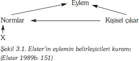

Bu bölüm, Sezer Ayan tarafından çevrilmiştir.
20. yüzyılın sonlarına doğru piyasa demokrasilerinde ortaya çıkan sağ-kanat ideolojilerde, bireysel çıkarın en çoklaştırılmasının (maximization), insan davranışlarını güdülediği, göreli olarak kabul görmektedir. İnsanların bireyselleştirilmiş maddi çıkarları olduğu (nu iddia eden iktisadi rasyonellik, arz iktisadı, yeni sağcılık, Reagan ekonomisi, Roger ekonomisi ve Thatcherizm gibi değişik şekillerde adlandırılan), bu çıkarların, birer değer olan adalet/refah gibi bağlılıklardan (commitments) veya kişisel gelişme, entelektüel uyarım, estetik takdir ve toplumu izleme gibi maddi olmayan çıkarlardan da önce geldiğini ileri süren kuramlarca bu ideolojiler desteklenmektedir. Bunlar sadece kuram değildirler, gerçek birer ideoloji olduklarından, toplumların bütünü gibi insan davranışını da maddi başarı ile değerlendirirler. Başarı; birey, kendisini mümkün olduğunca sömürülmekten koruduğunda ya da diğerlerini azami olarak sömürmesi durumunda değil, sadece üretim sürecinde verimliliği en üst düzeyde sağladığında, rakiplerine karşı maddi avantaj kazandığında, ortaya çıkar. Sömürü; istihdam ilişkisinde, pazarlıkta ya da ticaret ilişkisinde kurulabilir.
Ticaret ilişkileri, rasyonaliteyi (akılsallığı, çn.) insan toplumunun ana belirleyici özelliği olarak gören, resmi sosyoloji kuramları için birçok açıdan iyi bir örnek oluşturmaktadır. Böyle bir görüşte, toplum üyeleri, birbirleri ile değiş-tokuş edebilecekleri çok çeşitli kıt kaynaklardan oluşan, değerli varlıklara sahip bireyler olarak düşünülürler. Bu değerler, maddi olan malı, (hem üretim hem de tüketim mal), yetenekleri ve kazanılan unvanları içermenin yanında; kabul görme, şefkat, prestij, siyasal destek, cinsel karşılık verme ve emek gücü gibi sosyal değerleri de içerir. Böyle değerlerin kıtlıkları değişen derecelerdedir. Sadece, kişinin istediği değerler kendisine verilirse, bu durumda diğerleri de bu değerlere sahip olabilirler. Örneğin, bir kişi, diğerine maddi güvenlik karşılığında cinsellik önerebilir. İnsan toplumunun, açık ya da örtük olarak, bunun gibi birçok alış-veriş sonucunda ortaya çıktığı düşünülebilir.
Bir önceki bölümde tartışıldığı gibi, rasyonalitenin önemini belirten kuramlarla, bireyin (agency) önemini belirten kuramlar arasındaki bağ açıktır. Aslında, rasyonalite kuramları, birey kuramlarının bir alt türü olarak görülebilir. Bütüncül (holistic) olmaktan çok birey kuramları gibi, bireyselcidirler, şöyle ki; makro-yapısal sosyal olayların insan etkileşiminin sonucunda ortaya çıktığını bildirirler –rasyonalite kuramında böyle geniş çaplı bir olgunun önceden belirlenmiş olduğuna dair bir ifade yoktur. Varsayımları şudur: insanların karşılığını hemen almayı hedefledikleri, alıcı temelli ve başarı-merkezli doğaları vardır. Bu varsayım, bireylerin diğerlerinin yararına olan açık bir fedakarlıkta bulunduğu durumlar için de geçerlidir. Kendisini kesin bir ölüm riskine atan askerin, karşılığında yoğun bir prestij ve sosyal kabul görme, kahraman olarak kabul görme amacıyla hayatını ortaya koyduğu düşünülebilir. Aynı şekilde, dinsel amaçla şehit olan birisi, bütün ödüllerin en büyüğü olan cennette sonsuzluk şansını en çoğa çıkarmaktadır..
Böyle varsayımlarda bulunurken, rasyonalite kuramları, en azından kendi açılarından, Verstehen (anlama,çn.) ile ilişkilendirildiğini gördüğümüz anlamlandırma-geçerli kılma sorunlarını çözmektedirler. Hatırlanacağı üzere Weber, erklarendes Verstehen'in sadece eylem, araçsal ya da değer açısından rasyonel olduğunda kullanılabileceğini ileri sürmektedir. Geleneksel (alışkanlıkla ilgili) ve duygusal eylemler, sadece, sosyal-bilimsel statüsü olmayan aktuelles Verstehen aracılığıyla anlaşılabilir. Öyleyse, Weber'in tanımladığı sosyolojinin çalışma alanı oldukça dardır; çünkü, gündelik hayatta birçok eylem, kendisinin de kabul ettiği gibi, alışkanlıkla ilgilidir. Aynı şekilde, fenomenolojik ve etno-metodolojik sosyolojiler, anlam-kabulünü sadece düşünsel bakış ya da düşünsel açıdan alan davranış üzerine odaklanırlar. Giddens'ın çözümü, rasyonalite kuramını tamamen dışlamak, insan eyleminin amaçlanmayan (unintended) sonuçlarını incelemeye hazırlanmaktı. Bunun tam zıddı olarak, bu bölümde incelenen kuramlar; Weber sorunsalını, araçsal rasyonaliteyi, diğer üç türünü ve bütün insan eylemini en ince ayrıntısını kapsayacak şekilde genişleterek 'çözmeyi' amaçlamaktadırlar. Verstehen'ı geçerli kılma sorunu, böylece çözülmüş olur; çünkü tüm insan eyleminin anlamı aynıdır, insan eyleminin, araçsal çıkarların en çoklaştırılmasına yönelmiş olduğu düşünülür.
Öyleyse, özet olarak, rasyonalite kuramları aşağıdaki özelliklerin tamamına ya da çoğuna öncelik veren kuramlardır:
1. İnsanlar sosyal dünyadan aldıkları 'tatmin'i en çoklaştırmak isterler. Sosyal dünyayla ilgili bu 'çıkarlar'ın nesnel bir özelliği vardır.
2. Toplumun her bir üyesi, sosyal değerlerin arzını kontrol etme durumundadır. Maddi değerler, hem maddi hem de psikolojik sonuçları olan maddeleri içerir. Bireyin kontrolü altındaki değerler en çoklaştırıldığı ölçüde ve aynı şekilde, bu değerler için duyulan ihtiyaç ya da talebin azaldığı ölçüde, bireylerin elde ettikleri tatmin en çoklaşmış olur.
3. Sosyal dünyada diğerleriyle etkileşim, birbirleriyle rekabet altında olan değişim anlaşmaları ya da oyunlar olarak görülür. Toplumsal katılımın amacı, bu etkileşim süreciyle sosyal (maddi) değerlerin arzının artırılmasıdır. Bu, değerlerin kâr amacıyla alış-verişini içerebileceği gibi, birinin sahip olduğu arzı kontrol etme, diğerini zorlama ve/veya sömürme gibi daha karmaşık bir çabayı da içerebilir. Birçok rasyonalite kuramına göre, bütün katılımcıların toplamı menfaatler toplamına denk gelir ve toplam maliyet sıfır olur, ki, bu oyuna elde var sıfır oyunu denebilir. Bu da, kişinin çıkarına olan şeyin otomatik olarak diğerinin zararına olduğunu ima eder.
4. Bu nedenle, insan davranışının rasyonel olduğu kabul edilir; çünkü bireyler belirli bir eylemin bir bölümüne katılımın getiri ve maliyetlerini sürekli olarak hesaplamak durumundadırlar.
5. İnsanların istemleri ve tatminleri değişmez kaldığı için, katılımcılar normatif bir karakterde –diğer bir değişle ahlaki olarak doğru- olduğunu gördükleri, düzenli alış-veriş öneren sabit etkileşim kalıpları ortaya çıkar. Bu sabit alış-veriş kalıpları birlikte ele alındığında, büyük-ölçekli olgular oluştururlar. Bu akıl yürütme tersine çevrilirse, makro-yapısal olgular her zaman bireyler arası rasyonel alış-verişe indirgenebilir. Böyle bir durumu tanımlamak için kullanılan teknik terim 'metodolojik bireyselcilik'tir.
6. Ancak; rasyonalite kuramları için temel odak noktası ortaya çıkan yapısal düzenlemeler değildir. Temel eğilim, daha çok küçük grup etkileşimini ya da kanıtlanmamış grup etkileşimini araştırmak ve analiz etmek ve daha sonra sonuçları ampirik genellemeler düzeyini kapsayacak şekilde genişletmektir Bu ampirik genellemeler, kuramın yapı taşlarını oluştururlar.
7. Sosyolojik rasyonalite kuramları ile hem iktisat kuramı hem de oyun kuramı arasında genel bir örtüşme vardır; çünkü her biri, rasyonelce hesaplanmış eylem içinde bireyin çıkarının en çoklaştırılmasını vurgulamaktadır.
Bu örtüşmeden dolayı, rasyonalite kuramının birçok temel sayıltısını klasik iktisat kuramında bulabiliriz. Belki de çalışmalar arasında sosyolojik olarak en ulaşılabilir olanlar (ve Parsons [1937] sayesinde sosyolojik olarak en tanınmışları). 19. yüzyılda Cambridge'li iktisatçı Marshal'ın, ve İtalyan siyasal iktisatçı Pareto'nun, çalışmalarıdır. Ancak; iktisadi bakış açısına sahip olmakla birlikte, kıt maddelerin rasyonel alış-verişi bu tür kuramların tek temeli değildir. Kaynaklar sadece kıt oldukları için değil, aynı zamanda talep edildikleri için de değerli olarak tanımlanırlar. Skinner'ın davranışsalcı psikolojisi, davranışsal alış-veriş aracılığıyla, temel istem için kaynak oluşturur.
Sosyolojik rasyonalite kuramları üç akımdan birini izler. Birincisi, Homans'ın alış-veriş sosyolojisinin, direkt mirasçısı psikolojik davranışçılıktır ve bu daha sonra Blau, Emerson ve diğerleri tarafından geliştirilmiştir. İkincisi, iktisat kuramının özel-seçim kavramlarının, kamusal-seçim kuramı denilen ve iktisadi olmayan alanı kapsayan alandaki uygulamasıdır. Sonuncu olarak, kuramsal gelişmede Marksist bakış açısından sömürü ve oyun kuramını, alış-veriş kuramının öğeleri ile birleştiren, kuramsal gelişmede sosyolojik akıl yürütmenin üst noktası olarak tanımlanabilecek bir nokta vardır. Bu, rasyonel-seçim kuramı ya da oyun-kuramsal Marksizm ya da analitik Marksizm olarak adlandırılır. Bu bölüm bunların her birini araştırmaktadır.
Temel Sayıltılar
Rasyonellik üzerine en önemli ifadeler; bu kitabın başında faydacılık kuramı olarak tanımlanan geleneğin takipçilerince ve sosyal hayatın hem sübjektif hem de araçsal ya da maddesel olduğunu iddia eden kuramcılarca dile getirilmiştir. 19. yüzyıl kültürel yöneliminde giderek artan bir şekilde materyalist ve bireyci olan toplumda, böyle bir yaklaşım kolayca kendine yer bulmuştur. Ancak, bu kendini sosyologdan daha çok iktisatçı olarak tanımlayan sosyal bilimciler arasında gerçekleşebilmiştir. Bunlar arasında en etkili olanlar; (modern iktisadın kurucusu olarak kabul edilen) Marshall ve Pareto'dur. Her ikisi de bireylerin amaç ve hedeflerin özelliklerini belirlemeye çalışmışlardır. Günümüze daha yakın zamanlarda, 20. yüzyılda, Amerikalı psikolog Skinner; amaç ve hedeflere bağlılığın nasıl bireysel olarak sabitlendiğini göstermeye çabalamıştır.
Marshall: her zaman istediğini elde edebilirsin
Marshall'ın iktisat kuramı (1961) istem (istek, talep, want) kavramı ile başlar. İnsan evriminin biraz naif 19. yüzyıl kavramsallaştırmasına göre; ilkel toplumlarda istem ihtiyaçlardan doğar. Bu nedenle, en temel ihtiyaçlar temel yiyecek, giyecek, sığınak, vb. ihtiyaçlara yönelmiştir. Bu erken aşamada, bu istekler avlanma, inşa etme ve dokuma gibi etkinliklere yol açmıştır. Fakat; toplum geliştikçe bu ilişki tersine dönmüş ve etkinlikler isteklerin ortaya çıkmasına yol açmıştır. Örneğin; dokumacılıkta, gelişen beceriler ile birlikte ortaya çıkan olanaklar, giysileri güzel ya da modaya uygun oldukları için istemeyi olanaklı kılmıştır.
|
Alfred Marshall (1842-1924) |
| Bir İngiliz olan Marshall, ahlak bilimi üzerine ilk derslerini aldığı Cambridge'de okudu. 1885'de Siyasal İktisat Profesörü olarak Cambridge'e dönmeden önce, Bristol'daki siyasal iktisat kürsüsüne atandı. Adam Smith ve David Ricardo'nun klasik iktisadını daha uygun hale soktuğu için kabul görmüştür. İktisadın İlkeleri çalışması, adını taşıdığı disiplinin temel metinlerinden olmuştur. |
|
Kaynak: Penguin İktisat Sözlüğü (1984: Marshall, Alfred) |
İstem ve sosyolojik akıl-veriş kavramı arasındaki bağlantı 'fayda' kavramıdır. İstem bir aktörün psikolojik tercihi iken fayda, aktörün dünyadaki bir madde ya da bir nesneye yönelme yoludur. Bir nesnenin faydası, bir isteği tatmin edebilmesi ile ölçülür. Bireyler maksimum faydaya sahip eşyaları talep ederler (bu eşyaları elde etmek için alış-verişe girmeye çabalarlar).
Ancak; fayda, talep edilen nesnenin değişmeyen bir özelliği değildir – kişinin sahip olduğu miktara göre değişir. Marshall, burada iktisadın temel kanunlarından birini, azalan fayda kuralını ortaya koyar: 'Bir şeyin bir kişi için ifade ettiği fayda (o kişiye sağladığı toplam zevk ya da menfaat) o şeyin kişinin elindeki miktarı artıkça artar, ancak; elindeki miktarın artış hızı kadar hızlı artmaz.' (1961:93, italikler silinmiştir). Günümüz iktisadında bu kural, 'azalan marjinal fayda kuralı' olarak bilinmektedir; çünkü en son yapılan satın almanın sağlayacağı fayda kendinden bir öncekinden azdır. Bu kurala göre; marjinal fayda sıfıra hatta daha aşağıya inebilir (çikolatanın son parçasının kişinin midesini bulandırması durumunda olduğu gibi), böyle bir durumda kişi alış-veriş ilişkilerine girmeyi bırakacaktır (diğer bir deyişle çikolata satılan dükkandan uzak durmak gibi).
Marshall'ın faydaya olan ilgisi tamamen iktisatla ilgilidir, fiyatların değişime tabi tutulan hangi maddelerde hangi yollarla belirlendiğini anlamak istemektedir. Bir kişinin bir malzeme için ödemeye hazır olduğu fiyat (diğer bir deyişle para miktarı ya da kişinin karşılığında almak istediği değiş-tokuş malzemeleri) malzemenin sağlayacağı faydaya bağlıdır. Azalan marjinal fayda dikkate alınırsa, her marjinal kalem için kişinin ödemeyi kabul edeceği fiyat, bireyin parasının sabit olduğu varsayıldığında, kenar uçta azalma gösterecektir. Eğer fiyat düşük ise birey büyük bir miktar satın alacaktır, ve eğer fiyat yüksek ise birey buna uygun olarak daha az bir miktar satın alacaktır.
Bireyin satın alıp almama hesaplarına üç faktör daha girmektedir. Birincisi isteklerin elastik oluşu, fiyattaki değişime karşılık olarak kişinin isteklerini tatmin etme yöneliminin ne kadar hassas olduğu, faktörüdür. Bazı maddeler için istekler görece olarak elastik değilken, bazıları için elastiktir. Örneğin; eğer birinin bir arabası varsa, yakıt için duyulan istek görece olarak elastik değildir; fiyat yükselse de düşse de kişi aynı miktarlarda yakıt almaya devam etme eğilimi gösterecektir. Fakat; örneğin, bir araba CD-çalar için duyulan istek görece olarak elastiktir; fiyatta bir artış satın almayı engelleyebilecek ve fiyatta bir düşüş satın almaya teşvik edebilecektir. İkincisi, kişi daha çok fayda sağlayacak bir malzemenin alımını daha ileriki bir tarihe erteleyerek tatmini geciktirebilir. Ancak; nesneden hemen elde edilebilecek tatminden vazgeçtikleri için satın alındığı dönemde fayda uygun bir miktarda azalacaktır. Üçüncüsü, ödenen fiyat malzemenin değer ya da faydasından genellikle daha azdır- örneğin, kişi ev masrafları için gerekirse maaşının % 50'sini verebilecekken % 20'sini veriyor olabilir. Aradaki fark fazlalıktır ve elastik olmayan kalemler (ihtiyaçlar) sayesinde elde edilen bu fazla elastik olan kalemlere (lüks tüketim malları) aktarılır.
Burada, o halde, Marshall bize rasyonel toplum kuramının ilk unsuru olan fayda fikrini sunar. Fayda önemlidir; çünkü her bir birey tarafından alış-verişte kullanılan maddelerden herhangi birinin değerini tespit etmek için kullanılabilecek bir standart sağlar. Bu kavram sadece isteklere değil, aynı zamanda isteklerin tatmini karşılığında birinin önerebileceği maddelere de tekabül eder. Bir kişi malzemeyi elinde tutmanın sağlayacağı faydayı isteğin başka bir kişi tarafından tatmin edilmesinin sağlayacağı faydayla karşılaştırabilir ve sonra maksimum çıkar temelinde alış-verişe girme ya da girmeme konusunda tercih yapabilir. Açıktır ki; Marshall insanları rasyonel, çıkarlarını en çoklaştıran (maksimize eden) insanlar olarak görmektedir, bu günümüz iktisadı da dahil olmak üzere rasyonellik temelli toplum kuramlarını işgal etmeyi sürdüren bir görüştür.[18]
Pareto: kaçınılmaz mantık
Pareto ve Marshall aynı dönemde yaşamışlardır ve hiçbirinin kendileri ile aynı dönemde yaşamış olan ve daha ikna edici bulunan diğer sosyoloji kuramının kurucuları Durkheim, Marz, Simmel ve Weber üzerinde herhangi bir etkileri olmamışken, bazı fikirlerin karşılıklı olarak değişimiş olduğu da açıktır Parsons'ın (1937:13) bize ilettiğine göre; Pareto, Marshall'ı okuyarak 'neredeyse kesinlikle' ondan etkilenmiştir. İkisinin arasında örtüşmenin olduğu temel alan, Marshall'ın bireysel çıkarın rasyonel hesaplanmasının kökünde olan fayda kavramıdır. Pareto buradan başlar; fakat sonra bireysel faydayı toplumsal düzeye kadar genelleştirme yolunda önemli bir adım atar, böylece kendisini gerçek bir sosyolog olarak kabul ettirir.
|
Vilfredo Pareto (1848-1923) |
| Pareto asil bir İtalyan baba ve Fransız bir annenin çocuğu olarak Paris'te doğmuştur. Bir demiryolu şirketinde yönetici olmadan önce Turin Polytechnic'te mühendis olarak eğitim görmüştür. 1893 yılında İsviçre, Lozan'da sıra dışı bir İktisat profesörü olmadan öncesine kadar akademik atanması gerçekleşmemiştir. İlk yayınları bu 'sönük bilim' üzerinedir; fakat Tratato di Sociologia Generale (Genel Sosyoloji üzerine)'yi 1916 yılında yayınlamıştır. Hayatının son döneminde Benito Mussolini tarafından kurulan Faşist rejimin koruması altında İtalya'ya dönmüştür. |
|
Kaynaklar: Sosyoloji Sözlüğü (1984:s.v. Pareto Vilfredo); Penguin İktisat Sözlüğü (1984: s.v. Pareto, Vilfredo); Coser (1977; 387-428) |
Öyleyse Pareto (1966:99-102) bireysel fayda düzeyinde başlar; ancak, kavramın tek taraflılığından rahatsızlık duymaktadır. Fayda, kısa vadeli ve araçsal bir karakter taşır. Bir maddenin, eğer bir insan için kullanımı uygun ise faydası vardır. Fakat, bu kavram içinde faydanın iki türü vardır maddi zenginlik üzerine odaklanan iktisadi fayda ve ahlaki gelişim üzerine odaklanan ahlaki fayda. Örneğin, rutin ve düzenli olarak dini ibadete katılımın bireysel kurtuluşla olan araçsal ilgisi nedeniyle ahlaki faydası vardır. Yine de; kavramın hâlâ çok iktisadi ve araçsal karakterde olması onu düşündürmektedir. Bu nedenle, yerine 'ophelimity' teriminin kullanılmasını önerir. Ophelimity bir maddenin insanın bazı ihtiyaç veya arzularını tatmin etmesi anlamına gelir. Böylece, bu terim sosyologları bir birey ya da grubun çıkarlarını nesnel bir şekilde belirleme sorunsalından kurtarır. İktisadi ve ahlaki fayda olabileceği gibi, iktisadi ve ahlaki ophelimity de vardır.
Pareto, insanların maddi ve ahlaki çıkarlar peşinde rasyonel iktisadi eylemlerde bulunmalarının, eylemlerini bütünsel olarak temsil etmediğine karar verir. Bazı açılardan Weber'inkine benzeyen eylemin sınıflandırılmasını önerme aşamasına geçebilmektedir (Bakınız İkinci bölüm). Pareto için (1966:143-9, 183-209) üç tür insan eylemi vardır:
• Görece daha az önemli olan güdüsel ve alışkanlıkla ilgili eylemler
• Günümüz terminolojisinde rasyonel eylemler olarak adlandırılan mantıklı eylemler. Bu eylemler, gözlemcinin, aktörün araçlar ve amaçlarla arasındaki ilişkisini yeniden kurabileceği ophelimity üzerinde temellenir. İktisadi rasyonellik üzerinde temellenen eylemler bu eylemlerin en nüfuz edilebilir olanlarıdır.
• Aktörün uygun bir araç-amaç ilişkisinin kurulduğuna inandığı fakat gözlemci için mantıklı hiçbir şey ifade etmeyen, mantıklı olmayan eylemler. Böyle eylemler genellikle mantığın düşünsel bir bakış aracılığı ile kurulduğu eylemlerdir. Burada aktör, geçmişteki eylemlerin meydana çıktıkları sırada sahip olmadıkları bir mantıki şemayı empoze etmektedir.
Pareto, sadece mantıklı eylemleri incelemeyi amaçlayan başlıca iktisat kuramlarını eleştirmekte ve bunun yerine mantıklı olmayan eylemlerin analizine eğilmeyi önermektedir.
Mantıklı olmayan eylemler de alt gruplara ayrılır. Pareto'nun belirttiği üzere, insan toplumlarını karşılaştırırsak hem ortak davranış kalıpları hem de bireysel farklılıklar buluruz. Eğer bu farklılıklar elenirse, bu ortak kalıplar insan eyleminin evrensel tortuları olarak değerlendirilebilir ve bunlar, eylemlerin türevlerinden, insan sosyal yaşamının toplumsal olarak oluşturulan farklılıklarından ayırt edilebilirler. Şaşırtıcı bir şekilde bu tortular oldukça çok oldukları için, altı gruba ayrılmışlardır. Bunlardan en önemlileri:
• 'birleşim güdüsü', nesnelerin birbirleri ile bağlantılı olduğunu fark etme eğilimi
• 'birikimlerin kalıcılığı', insan ilişkilerinin zaman içerisinde sürekliliğini fark etme eğilimi
• 'sosyallik', insanların bir toplum içinde yaşama ve kendilerini ona tabi kılma yönelimi.
Buna karşın, türevler, insan bilgisinde, otorite kalıplarında ve toplumdaki uzlaşım derecesindeki değişiklikleri içine almaktadır.
Marshall'dan farklı olarak, Pareto'nun temel ilgi alanının rasyonel olmayan (mantıklı olmayan) eylemler ve arzuları elde etmek için yapılan mantıklı eylemler olduğu, tercihen maddi çıkarları elde etmek için yapılan eylemler olduğu düşünülebilir. Bu doğru değildir. Pareto için, mantıklı olmayan eylem, evrimin sürekli ilerlemesi sonucunda gelişmeyle dışlanan adi bir eylem formudur. Somut insan toplumu; duyguların, çıkarların ve mantıklı akıl yürütmenin ve aynı zamanda bu tortu türevlerinin birleşimidir; fakat, sadece çıkarlar ve akıl yürütme aracılıyla toplum yönetilebilir. Pareto böylece toplumun bireylerinden çok, bir bütün olarak toplum için neyin iyi olduğuna ilişkin kamu yönetiminin bir eleştirisini geliştirebilmektedir. Örneğin; bir toprağın fethedilmesi amacıyla savaş eylemine girişen bir hükümet, bu eylemini ulusun gücü ve kimliğini sağlamlaştırmak gibi mantıklı olmayan nedenlerle meşrulaştırabilir. Aslında, böyle bir hükümet, bu eyleminin toplumun tüm bireyleri için önemli olduğunu söyleyerek de meşrulaştırmayı sürdürebilir. Fakat, mantıki açıdan değerlendirildiğinde savaş belki de yapılmamalıdır; çünkü toplumun bireylerinin büyük fedakarlıklar yapmasını gerektirir (hayatını, mülkünü kaybetmek vb.).
Pareto (1966: 253-6) (bir bütün olarak) bir topluluğun maksimum faydası ile (bireylerin toplamı olan) bir topluluğun maksimum faydasının, sosyal bilimciler tarafından karıştırılmaması konusunda ısrarlıdır. İkincisinin kamu politikaları için tek akılcı temeli oluşturduğunu benimser; çünkü en azından mantıklı olmayan eylem, siyasi analistler için nüfuz edilemez bir eylemdir. Kamu politikaları, her zaman ve kaçınılmaz olarak, araya girer ve bireysel faydaların gerçekleştirilmesi için karar verir. Başarılı bir kamu politikası, bireysel faydaların açık bir şekilde toplumda en çoklaştırılmasını amaçlayan bir hesaplama yapar.
Bu formülasyon çağdaş sosyal bilimler literatürüne 'Pareto optimality' olarak geçmiştir ve göreceğimiz üzere, kamu-seçimi kuramında önemli bir yere sahiptir. Pareto, (optimality) mükemmelliğe tamamen ulaşılmasının imkansız olduğunu kabul etme konusunda ilktir (1966:300). Kimse sonsuz bir geleceğe kadar bireyler için neyin iyi neyin kötü olduğu konusunda son ve mutlak yargılarda bulunamaz. İnsan eyleminin yakın (acil ve maddi) sonuçları üzerinde araştırma yapılmalıdır. Bu formülasyonda, 'ideal toplum' ya da 'adil toplum' gibi kavramlar şairler ve metafizikçilerin ilgi alanına girer. Sonuçta, proleter devrim olasılığı dile getiren Marksist iddiaya karşı durduğu metinde belirttiği gibi, mantıklılık baskın toplumsal yönelimdir:
[İ]şçiler yüksek maaşlar, gelişen vergilendirme ve daha fazla boş zaman gibi somut menfaatleri tercih ederler- kendi mitleri ile serbestçe hoşça vakit geçirirken yaptıkları bir tercih: kutsal proleterya miti, kapitalist sistemin kendine has şeytaniliği miti ve işçi-asker sovyetleri yönetimindeki ideal hükümet miti ve bunun gibi. [1966: 302]
Pareto'nun optimality kavramının bir mit olup olmadığını daha sonra inceleyeceğiz.
Skinner:
temiz bir yaz boz tahtası üzerine yazılan toplum
Hem Marshall hem de Pareto, insan davranışının analizinin, maddi istemlerin tatmin edilmesi temelinde olması gerektiği gibi bir görüşe sahiptirler. Ancak; Pareto'nun evrenselliğini (tortular) iddia ettiği bazı insan isteklerinin dışında, üzerinde isteklerin ortaya çıktığı ve sürdürüldüğü temeli kuramlaştırmadan bırakmaktadırlar. Bunun da ötesinde, neden bazı isteklerin bazı eylem türleri şekline sokulabildiği, bazılarının ise sokulamadığını açıklama konusunda yetersizdirler. Örneğin bir kişi için riskler değerlendirildiğinde ailesini beslemek için banka soymak, şekerci dükkanında çalışmaktan daha rasyonel olabilir ve ayrıca, neden ikinci eylemin daha sıklıkla birinciye tercih edildiğini, mantıklı olarak, sormak isteyebiliriz. Bu tür soruları cevaplandırmak için ortaya konan genel açıklamalar 20. yüzyıl davranışçı psikologlarından Skinner'dan gelmektedir.
|
B.F. Skinner (b. 1904) |
| Amerikalı olan Burrhus Frederick Skinner, psikolojinin davranışçı ekolünün kurucusudur. Daha sonraları düşüncelerini genel toplum felsefesi adı altında genelleştirmiştir, örneğin; Özgürlüğüm Ötesi ve Haysiyet adlı çalışmasında bireysel davranışın değişimi yoluyla insan toplumunun değiştirilebileceğini öne sürmektedir. |
Skinner (1953; 1974), sadece spekülasyon olarak değerlendirilen öznellik ve yapısalcılık da dahil olmak üzere, bu kitabın diğer bölümlerinde gözden geçirilen düşüncelerin hemen hemen hepsini, reddetmektedir. Skinner için, vasıtalara vurgu yapan kuramların bilimsel geçerlilikleri kabul edilemez; çünkü sosyal yapılar sadece gözlemcinin kafasındaki soyutlamalardan ibarettir. İnsan deneyimi daha ziyade özünde organik olarak görülmelidir – bilinen herşey vücut tarafından bilinir ve beynin alabileceği tek bilgi vücudun sinir sisteminden geçerek iletilen bilgidir. Bu yüzden, isteklerin tatmini organik olarak iletilmelidir.
Yine de, Skinner'ın kuramsal ifadelerinin temeli aslında rasyonalisttir (1974: 39, 46). Marshall gibi Skinner da, insan organizmasının çevresindeki yiyecek, su, yakıt ve barınak gibi birçok maddenin, insanın yaşamını devam ettirebilmesi için hayati derecede önemli olduğu görüşü ile başlar. Organik olarak, hayatta kalmaya karşı tehditleri azaltan davranış, gerekli maddeleri temin eden davranış, bu sonuç ile güçlendirilir ve sağlamlaştırılır. Böyle bir davranışın iki çeşidi vardır: istem dışı ve otomatik olan refleks davranışı ve daha önemli ve ilginç olan, iradenin ürünü, işlevsel davranış. Skinner'a göre; dış çevredeki olaylar ile güçlendirilen işlevsel davranış şartlandırılır. Pozitif bir güçlendirici, kendisini üreten bir davranış biçimini güçlendirir (örneğin; yemek yemek açlığı azaltır ve bu nedenle tekrar edilir); negatif bir güçlendirici, vurgulayan ya da önleyen bir davranış biçimini güçlendirir (örneğin; sıfırın altındaki ısılar kişide barınma ihtiyacı yaratır).
Skinner (1974: 49-52) artık istemlerin ne olduğunu söyleyebilecek durumdadır. Basitçe bir ifadeyle, hayatta kalabilmek için ihtiyaç duyduğumuz şeylerin kıtlığıdır. İnsanlar kıtlığı en azlaştıracak şekilde davranırlar. Bu gerçek, çevredeki diğer insanlar tarafından bazı davranışları şekillendirmek ve sürdürmek için kullanılabilir ve kullanılacaktır. Yiyeceğin sunulması ya da elde tutulması ya da şefkatli kucaklamalar bazı davranışların ortaya çıkmasını sağlayacak bir uyaran olarak kullanılabilir, örneğin; özellikle çocuklar üzerinde.
Skinner (1953:91-106) bir yandan belirli bir davranışı teşvik etmek, diğer yandan belirli bir davranışın hünerli bir şekilde tamamlanmasını sağlamak için ihtiyaç duyulan iki tür uyaran ayırt etmektedir. Bir şeyin yapılmasını sağlamak tutarlı bir şekilde tekrar etmekle başarılabilir. Fakat, bir şeyin hünerli bir şekilde yapılmasını sağlamak yoğunluk, zamanlama, programlama açısından farklı bir sağlamlaştırma gerektirmektedir. Bu yüzden, bir davranış hünerli bir şekilde yerine getirildiğinde, hünerli performansı en çoklaştırmak için güçlendirmenin hemen ve yoğun bir şekilde yapılması gerekmektedir. Davranışın zaman içerisinde sürekliliğini sağlamak Skinner'ın değişen–aralıklı pekiştireci (1953:116); alıcının tahmin edemeyeceği zaman aralıklarında yapıldığında görece olarak daha sıkça ortaya çıkar.
Gözle görülebilir bir sorun kalmaktadır. İnsanlar sadece hayati ihtiyaçlarını karşılayan etkinlikler içerisine girmezler. 'Satranç oynamak' ya da 'sosyoloji kuramı üzerine bir kitap okumak' gibi eylemlerinin hayatta kalmakla direkt bir ilişkisi yoktur, yine de insanlar bu eylemleri yaparak tatmin olabilirler. Skinner (1953: 107-10) bu sorunu, her davranışsal olayın üç kalemden oluştuğunu düşünerek çözmeye başlar: uyaran, çevreden davranışı gerektiren ya da ortaya çıkaran sinyal; uyarana verilen yanıt, davranışın kendisi; ve pekiştirme. 'Aralıklı pekiştereçte' (örneğin, değişken aralıklı pekiştireç) uyaran verildiğinde bir yanıt verme eğilimi gösterilmektedir, şöyle ki; uyaran-yanıt ilişkisi kendi içinde pozitif olarak değerlendirilmektedir. Sadece pozitif pekiştirme ya da negatif olanların tersine çevrilmesi tatmin olarak değerlendirilemez. Sadece aç olduğumuz için akşam yemeklerini dört gözle beklemeyiz, ya da eşlerimizi nesillerin devam ettirilmesinde yardımı olacağı için her akşam işten sonra görmek istemeyiz. Bu uyaranlar ve de bunlar üzerinde temellenen giderek karmaşıklaşan uyaranlar kendi içlerinde tatmin edicidir.
'Tümevarım' süreci, ortak nitelikleri olan uyaranların ortaya çıkardığı yanıtlardandır. Yanıtların benzerlik derecesi, uyaranların benzerlik derecelerine göre değişir. Bu yüzden, satranç oyunundan hoşlanma olgusunu uyaranlarının daha hayati olan diğer rakip etkinliklerde, örneğin; avcılık, elde edilen uyaranlara benzerliği ile 'açıklayabiliriz'. Bazı durumlarda çevre, uyaranın bazı yönlerini istenen yanıt doğrultusunda, uyaranın diğer yönlerine verilen yanıtları durdurarak, daraltacaktır. Bu durum, özellikle dilin karmaşıklığında geçerlidir –insanlar dilin tonlaması, fonetiği, semantiği ve de sentaksının tüm çoklu kombinasyonlarına tahmini yanıtlar vermeye şartlandırılmışlardır. Skinner için, anlamlar sorunsuz olarak dışsallaşır. Uyaran olduğunda, bir eylemin anlamı ortaya çıkardığı yanıttır; eylem yanıt olduğunda anlam uyaran tarafından belirlenir.
Öyleyse, Skinner için, insan davranışı çevresel olarak tanımlanır. Birey, hayatta kalmak için ihtiyaç duyduğu şeylerin kıtlığını gösteren isteklerin tatminini hedefleyen insan olarak anlaşılır. Çevre bu bağımlılığı bireyin davranışlarını belirli yönlerde şartlandırmak için 'kullanır'. Birey, bu kuramsal yaklaşımda diğerlerinden daha fazla, sosyal çevrenin büyük harflerle üzerine yazıldığı tabula rasa (boş levha, tahta)dır. Çevrenin koşullandırıcı etkisi altında, hayati olmayan tatminlerin bireyde oluşumu da teşvik edilebilir. Bazılarımız uyaran olarak Brahms'ı severken, diğerleri Springsteen'den hoşlanır; çünkü, bu tür tatminlere koşullanmışızdır.
Skinner'ın tezinde en büyük eksiklik, tesadüfi bir şekilde, büyük ölçekli sosyolojik yapıların kurulması için yararlı bir entelektüel boşluk yaratan çevrenin tarafsızlığı varsayımıdır. Onun görüşüne göre, bu tür yapılar ya kendi kendini üreten ya da varolmayan yapılar olarak görülmelidir. Ancak; daha acil olan sorun, insanları tatminlerini en çoklaştıran rasyonel bireyler olarak gören Skinner'ın kuramı ya da iktisat kuramının üzerine, sosyoloji kuramının kurulup kurulamayacağı sorunudur. Alış-veriş kuramı tam da bunu yapmaya çalışmaktadır.
Alış-Veriş kuramı: ilişkilerin değişimi
Sosyolojiye rasyonalist düşüncelerin sokulması yolunda ilk deneme, yirminci yüzyılın ortalarında alış-veriş kuramı şeklinde olmuştur. Varolan sosyal normların, bireysel çıkarlar sonucunda ortaya çıktığını göstermek için, alış-veriş kuramı, insan davranışına ilişkin ekonomi modeli ile Skinner'ın koşullanma kavramını birleştirmiştir. Bu geleneğin yaratıcısı, 1950'ler ve 1960'larda Harvard'da aynı bölümde meslektaşı olan Parsons (Bakınız Bölüm 5) ile bu konu üzerine tartışmaya giren Homans'dır.
Homans: adil alış-veriş
Emerson (1981: 31-4) alış-veriş kuramında üç ayrı temel varsayım tanımlamaktadır:
• Sosyal etkileşimlerinde, insanların, ortaya çıkan maliyet ve elde ettikleri yararlar, odak noktadır. Sosyal değerlerin; eşyalar, para, övgü, saygı, kabul ve dikkat çekmeyi içeren birçok türü vardır; fakat, ortak özellikleri insanların onları elde etmek ya da üretmek istemeleridir. Bu yüzden, temel varsayım insanların (sık sık ya da her zaman) yararlarını en çoklaştırmak için rasyonel bir şekilde hareket edeceğidir (diğer bir deyişle, güçlendirme, değer, fayda, ödül ya da bir şeyin karşılığını alma)
• Maddelerin değeri değişkendir, fakat, hepsi azalan marjinal fayda ilkesine uygun hareket ederler (alış-veriş kuramında, bu tatmin etme ya da değer uyarlama ilkesi olarak adlandırılır).
• Bireyin sosyal etkileşimden elde edeceği yararlar bireyin diğerlerine sağladığı yararlara bağlıdır. Bu yararları elde edebilmek için, sosyal ve etkileşimci yapıda karşılıklı bir değişim sürecinin olması gereklidir. Toplum, bu nedenle, yarar akışlarının şebekesi olarak algılanır.
|
George Caspar Homans (1910- 89) |
| Amerikalı Homans kariyerine, Harvard Business School'da Lawrence Henderson ve Elton Mayo'nun etkisi ile 1930'larda sosyoloji ve antropoloji ile tanışmadan önce, tarihçi olarak başlamıştır. İkinci Dünya Savaşı'ndan sonra aynı üniversitede Sosyal İlişkiler bölümünde çok disiplinlilik konusunda Talcott Parsons'la çalışmaya başlamıştır. Parsons'ın büyük boy kuramsal sosyolojisine açıkça ve şiddetle bir şekilde karşı çıkmış ve yerine alış-veriş kuramının pozitivist ve bireysel versiyonunu önermiştir. |
|
Kaynaklar: Penguin Sosyoliji Sözlüğü (1984: s.v. Homans, George); Ritzer (1991: 426-7) |
Homans'ın alış-veriş kuramında olduğu kadar hiçbir kuramda psikoloji ve iktisat arasındaki birleşim bu kadar açık değildir; fakat Skinner'a olan borcunu açıkça ifade etmektedir. Skinner insan davranışlarının analizini, özellikle güvercin ve fare gibi hayvanlar üzerindeki laboratuar çalışmaları üzerine temellendirmektedir. Sosyolojide alış-veriş kuramları geleneğinin kurucusu olan Homans, bulguların türler arasında transferini de sorunsuz olarak görmektedir. Birçok hayvan davranışı yapısal olarak refleksklerden ibaretken, özellikle laboratuar hayvanlarında ortaya çıkması teşvik edilen davranışlar, insanların davranışlarına benzeyen işlevsel davranışlardır. Aslında Homans, yukarıda belirtildiği şekilde, kendi yaklaşımında temel oluşturması açısından Skinner'ın analizini özetlemekten memnuniyet duymaktadır (1961). Ancak; iki analiz arasında önemli farklılıklar da vardır. Skinner'ın çevreye, tanrısal özellikler olan, muktedirlik ve algılanabilirlik ötesi olma gibi, özellikler atfettiğini ve böylece çevreye 'görünmez bir el' özelliği kazandırdığını görmüştük. Homans'da çevre, her biri birbirlerine benzeyen, kendilerini içinde buldukları durumları kontrol etme ya da bu durumların koşullarını belirleyerek çıkarlarını en çoklaştırma çabasındaki bireyler tarafından da doldurulur. Böyle durumlar, ödüllerin kendi lehlerine akışını kontrol etmek isteyen bireylerin oluşturduğu çiftli gruplar arasında ortaya çıkan etkileşimler olarak algılanır. Aslında, başarılı bir manevrayla, Skinner'ın hayvan laboratuarını, güvercinin kendisine yiyecek vermesi karşılığında psikoloğa bulgular sağladığı, deneysel psikolog ile güvercin arasındaki bir etkileşim olarak yeniden kavramlaştırmakta, böylece psikoloğun davranışını koşullandırmaktadır. Homans, kimin daha karlı olduğu konusunda yorum yapmamaktadır. Homans, analizini günlük ya da alt kurumsal sosyal davranış, diğer bir deyişle, bireyler arası etkileşim olarak tanımladığı davranışla sınırlandırmaktadır. İlgilendiği davranışın (1961:2-3) üç önemli özelliği vardır:
• Davranış sosyaldir; şöyle ki bir birey eylemde bulunduğunda performansı diğer bir bireyin davranışı ile ödüllendirilecek ya da cezalandırılacaktır.
• Diğer birey, pekiştirmenin herhangi daha büyük bir yapı tarafından iletilmeyen, direkt kaynağı olmalıdır.
• Davranış, ideal ya da beklenen davranış olmaktan ziyade hayata geçirilmelidir.
Homans, kendi yaklaşımının, kabul edilegeldiği anlamda, herşeyi açıklamayı hedefleyen bir büyük kuram olmadığını söyleyecektir. Örneğin; kuralların nasıl konulduğunu ya da bütün toplumların nasıl değiştiğini açıklamaya çalışmaz.
Homans'ın amacı, insanlar arasında alış-veriş hakkında evrensel bazı önermeler ortaya koymaktır ve bunu en basit ya da ilkel düzeyde yapmayı amaçlamaktır. Bu nedenle, bazı ilkel terimleri tanımlayarak başlar (1961:30-41): etkinlik davranışın bir türüdür, ancak somut bir örneği değildir; 'his' içsel eğilim ve duyguları ifade ya da sembolize eden belirli tür bir etkinliktir; ve 'etkileşim' iki birey karşılıklı olarak birbirlerinin etkinliklerini yönettiğinde ortaya çıkar. Etkinlikler, 'sıklıkları' ve 'değerleri' açısından değişken iken, ikincisi değer güçlendirmenin gücünü gösterir. 'Değer' terimi iktisatçıların 'fayda' terimi ile aynıdır (1961:41). Homans burada bu terimleri, bir yardım karşılığında, onaylanmayı karşılıklı değiştiren iki birey ('Birey' ve 'Öteki') arasındaki nazari ve ilkel duruma uygulamaktadır.
Böyle bir durumdan Homans beş temel önerme çıkarmaktadır. Eğer yardım-onaylamanın alış-verişinin uzun bir tarihi varsa (Birey Öteki'nden yardım ister, Öteki yardım eder ve sonra Birey Öteki'ne teşekkür eder) Birey tipik bir şekilde gelecekte de yardım isteyecektir.
• Şu anki durum ile ödüllendirmenin gerçekleştiği durumlar arasında ne kadar benzerlik varsa, etkinliğin yapılması olasılığı o kadar fazladır.
Ayrıca; kişi şükran ve takdir duygularını Öteki'ne ifade ettikçe, Öteki'nin yardım önerme olasılığı artar.
• Etkinlik ne kadar sık ödüllendirilirse, yapılma olasılığı da o kadar artar.
Ayrıca; eğer kişi Öteki'nin yardımını takdir eden tek bireyse, Öteki'nin bu yardımı yapma olasılığı o kadar yükselir.
• Bir etkinliğin ödülü ne kadar değerli olursa, yapılma olasılığı o kadar yüksektir.
Ancak; Birey'in Öteki'ne şükran duygularını sürekli olarak ifade etmesi, ötekinin bu teşekkürleri değersiz hatta belki de can sıkıcı olarak görmesine neden olacaktır.
• Yakın geçmişte, etkinliklerin ödüllendirilme sıklığı, takip eden her ödülün değerini azaltır (diğer bir deyişle, marjinal fayda azalır).
Buraya kadar, bu düşüncelerin Skinner ve Marshall'dan yapılan çıkarımlar olduğu açıktır – bireyler eğer karşılığında ödül alacaklarsa eyleme geçerler; fakat etkileşime dahil olanlar dikkatli olmak zorundadırlar; çünkü ödüller değerini kaybedebilir. Karşılıklı etkileşim ilerledikçe katılımcılar iki tür hesaplaşmayla karşılaşırlar. Öncelikle, başkalarına ödül sağlamanın kendileri için maddi ve manevi maliyetini hesaplarlar. Ve aynı zamanda, aldıkları ödüllerden elde ettikleri karı hesaplayacaklardır. Genellikle, bunlar arasında basit bir denge kurmaya çalışırlar – adalet dağılımı için (1961:75) ve böylece diğer bir önerme ortaya çıkar – eğer Öteki, Birey'in yapılan yardımı yeterli derecede takdir etmediğini düşünüyorsa, Öteki'nin duygusal davranması muhtemeldir.
• Adaletin dağıtılmasında dezavantajlı olan kişinin öfke duyma olasılığı yüksektir.
Yukarıda söylenenlerden açıkça anlaşıldığı üzere, Homans analizini, iki kişi arasındaki etkileşim düzeyinde yoğunlaştırmaktadır. Ancak; büyük karmaşıklık, ölçü ve dayanıklılık gibi sosyal olguların açıklaması gerekliliğinin farkındadır. Kendilerinin 'psikolojicilik' (1961: 378-98) suçlamalarından korumak isteyen diğer alış-veriş kuramcılarının kutsal bir alanı haline gelen bu 'kurumsal' alanda alış-veriş kuramının özenle düzenlenmesi için bir program belirlemeye koyulur. Küçük-ölçekli ve büyük-ölçekli sosyal olguların, onları oluşturan köklü süreçler açısından değil, sadece karmaşıklık düzeyinde farklı olduğunu iddia eder. Bu karmaşıklığın iki şekli vardır. Birincisi, davranışlar diğerlerinden direkt olarak alınan birincil ödüller yerine para ve statü gibi genelleştirilmiş güçlendiriciler ile sürdürülür. İkincisi, ödül dolaşımlı ya da dolayımlı bir şekilde elde edilebilir. Bu tür alış-verişlerin düzenliliği, önceki temel alış-verişlerin üzerinde temellenen normlar ve modeller ile sağlanır. Örneğin; normlar, belirli türde karşılıklı etkileşim süreçlerinin üzerine kurulan beklentilerdir. Takım elbise giymeyen bir yönetici, hemen ödemesinin yapılmaması ile tehdit edilmez; fakat sosyal kabul görmemeyle karşılaşabilir. Sosyal kabul görmeme menfaatlerin kaybedilebileceğine dair bir mesajı ileten genelleştirilmiş bir aracıdır.
Takım elbise giyen yönetici örneği, basit bir kuruma aittir. Sıradaki soru, karmaşık ve incelikle düzenlenmiş kurumların ortaya çıkış yoluyla ilgilidir. Homans, açıkça, Giddens ya da Berger ve Luckman tarzında bir sosyal kurmacıdır (constructionist) (Bakınız Bölüm 2): 'toplumun sırrı', onun insanlar tarafından yapıldığı ve insanın meydana getirmediği hiçbir şeyin toplumda varolmadığıdır (1961:385). Öyleyse, günümüz karmaşık toplumunun kökleri direkt olarak başlıca temel sosyal davranış düzeylerini sorgulayan, yani alış-veriş içine giren, nazari küçük-ölçekli ilkel birimde yatar. Eğer toplum bir tür artık değer oluşturursa (örneğin, yiyecek, para ya da askeri personel) kurumsal düzenlemelerin iyileştirilmesi başlayabilir. Böyle bir iyileştirmenin bilinçli olduğu anlaşılmalıdır: 'Toplumdaki bazı fertler ya da fertlerden oluşan gruplar……artık değeri orijinal ya da ilkel kurumsal modelden ayrılan yeni etkinlik gruplarına yatırım yapmak için kullanmakta heveslidirler' (1961:386). Bu yeni model, kaçınılmaz olarak, hemen ortaya çıkan ilişkilerin ötesine geçer ve aradaki ilişkileri de içerir. Yeni yatırımın getirilerinin içe akışına kadar aradaki bu ilişkilerin sadakatinin sürdürülmesi için yeterli sermayeye ihtiyaç vardır. Sermaye; para, sosyal kabul ya da şiddet araçlarının kontrolü gibi genelleştirilmiş pekiştireçlerden oluşmalıdır. Yatırım arttıkça, bağımlılık zinciri daha iyileşecek, şebeke içindeki roller daha uzmanlaşacak, karşılıklı bağımlılık düzeyi daha büyük olacak ve böylece şebekeyi bir arada tutan normlara veya otoriter komutlara uyma eğilimi daha fazla olacaktır. Her halükarda, hem yatırımcı hem de bu yatırımı sürdüren katılımcılar için karşılıklı bir ödeme olmazsa, kurumsal gelişme olmayacaktır.
Emerson: adil olmayan alış-veriş
Homans'ın kurumların gelişimi için oluşturduğu program, kendisinin de kabul ettiği gibi spekülatiftir; 'hasattan sonraki ilkel eğlencelere' benzemektedir (1961:378). Büyük ölçekli, sosyal kurumların gelişimiyle ilgili, çok daha sistemli bir kavramsallaştırma Emerson tarafından yapılmaktadır (1981). Emerson'ın bu eleştirel yaklaşımı alış-veriş kuramını ikililikten (iki kişi arasındaki etkileşim) öteye taşımaktadır. Bu ikiliğin analizinde esas sorun; her bir üye için sömürülme ve böylece gücün farklılaşmasını önleyen kaynakların varlığının tekelleşmesini varsaymasıdır. Emerson, analiz düzeyini yükseltmek için, iki ya da daha fazla, birbiriyle ilişkili alış-veriş ilişkilerini içeren, alış-veriş şebekesi kuramını ortaya koymaktadır. En basit örnek; A-B ilişkisi ve B-C ilişkisinin B aracılığıyla birbirine bağlandığı üçlü (üç kişili etkileşim)dür. A-B karşılıklı etkileşimi B-C karşılıklı etkileşiminde artışa yol açıyorsa, bağlantı pozitif ya da işbirliğiyle ilgilidir, örneğin; A işveren olduğunda, B bir çalışan/müşteri ve C metaların üreticisidir.
A-B alış-verişindeki artışın B-C alış-verişi düzeyini artırması durumunda bağlantı negatif ya da rekabettedir, örneğin; A ve C çalışan olduklarında, B işverendir. Bu basit örnekte, negatif bağlantılı şebekede B'nin pozisyonu güçlüdür; çünkü herşeyin sabit olması durumunda, B'nin kontrol ettiği kaynaklar görece kıttır – emeği sunan iki kişi vardır; fakat maaş veren sadece bir kişi vardır. Bu meydana geldiğinde, güçlü olan birey diğerlerini sömürme durumunda olabilir ve böylece artık değeri oluşturabilir, her ne kadar bu adil dağılım hakkında kızgınlık yaratsa da.
Öyleyse, Emerson sosyal yapıyı, stratejik olarak yerleştirilmiş bireylerin kaynakları tedarik edebildiği ve tekelleştirebildiği, birbirleriyle bağlantılı şebekeler olarak algılamaktadır. Ancak; kavram, menfaatlerin kişiler arası alış-verişi kavramına bağlı kalmaktadır ve Homans'ın gösterdiği gibi, bütün davranışlar bu şekilde kurulmaz. Alış-verişin miktarı, yapılarının sabit makro-yapılara çevrilmesi hakkındaki genel düşünceyi öne süren Blau'dur (1964).
Blau: güç çekicidir
Homans ve Emerson gibi Blau da ilkel bir düzeyden, yani, insanların neden birbirleriyle ortaklık kurduğu düzeyinden başlamaktadır. Blau için açıktır ki; insan ortaklığı özsel olarak ödüllendiricidir: İinsanların zevklerinin çoğunun kökeni sosyal hayattadır' (1964: 14). Fakat insan ortaklıklarına katılmak beraberinde maliyetler ve maliyetlerin dağıtımını da getirebilir ve yararlar nadiren denktir – insanlar birbirleri için hemen ya da görünen bir karşılık olmadan iyilik, yardım ya da destek dedikleri şeyleri yaparlar. Ancak; normalde karşılığında sosyal kabul görürler ya da en azından diğer kişinin gelecekte bir gün kendileri için bir iyilik yapma durumunda olabileceğini tahmin ederler. Bu yüzden, sosyal hayat hedonizm ve egoizm farklı nesneler üzerinde odaklanır ve bu da kişileri istemedikleri şeyleri istedikleri şeylerle değiştirebilecekleri pozisyonlara yerleştirir. Blau böylece, her halükarda insan ortaklığının alış-verişi ima ettiğini iddia eder.
|
Peter M. Blau (b. 1918) |
| Blau Avusturya, Viyana'da doğdu; fakat 1939'da ABD'ye göç etti. Doktorasını 1952 yılında Columbia Üniversitesi'nde yaptı. En azından, organizasyon kuramı ve mesleki statünün ve hareketliliğin ölçümü gibi kurama katkılarıyla tanınmaktadır. |
|
Kaynak: Ritzer (1992: 528) |
Ortaklıkların (bağlantıların) oluşumunu tetikleyen güç 'sosyal çekicilik'tir. Blau, genellikle bu terimleri mümkün olan en geniş şekliyle kullanmak istemektedir – yani, bir kişinin doğal çekiciliği ya da o kişinin sağlayabileceği bariz avantajlar sebebiyle o kişiye meyilli olmak gibi. Ancak; ortaklığın oluşumu sadece başkaları tarafından çekilmeye değil, başkalarını çekmeye de bağlıdır. Emerson'dan farklı olarak, Blau, ikili alış-verişdeki güç farklılıklarının mümkün olduğunu kabul etmeye hazırdır. Bunlar, bir kişi alış-veriş açığı içerisinde olduğu zaman ortaya çıkarlar ve sadece kendilerini ötekine tabi kılarak alış-verişin sürekliliğine destek olurlar. Öteki, güç kredisini, diğer alış-verişlerde komuta etmek için kullanılan gücü, kabul eder. İnsanlar, diğerleri kendilerine bağımlı olduğu ölçüde güçlüdürler.
Gücün ayrıştırılması, kolektif sosyal örgütlenme kurmak için işleyen iki dinamik gücü ortaya çıkarır. Birincisi meşruluktur. İnsanların sosyal yararlar karşılığında kendilerini tabi kılmayı istemeleri gerçeği, gücün kullanımının kabulünü gösterir. Bu kabulü ilettikleri ve ifade ettikleri ölçüde, güç meşrulaştırılır. Gücün meşruluğu hedeflerin takibinde kolektif çabanın örgütlenmesine izin verir. Ancak; güç uygulanması menfaatlerin değerini düşürdüğü şeklinde algılanır, ikinci dinamik bir güç oyuna dahil olur, muhalefet. Burada insanlar birbirlerine itirazlarını ifade edecek ve ileteceklerdir. Ancak; bu aynı zamanda kolektif örgütlenmenin kaynağıdır; çünkü insanlar muhalefetlerini etkili kılmak için sosyal hareketler, partiler ve birlikler şeklinde muhalif örgütlenmeler oluştururlar.
Burada Blau, mikro-yapılar (etkileşime giren bireyler) ve makro-yapılar (birbiriyle ilişkili gruplar) arasındaki kritik bağlantıyı kurar. Bu düşüncede ilk adım, iki tür yapıda birbirine paralel süreçlerin olduğunu söylemektir – insanların birlikte çalışması gibi gruplar da birlikte çalışır ve bir birey diğerine karşı çıkabildiği gibi aynı şey gruplar için de söylenebilir. Bunun temelleri bütün etkileşim durumları, evrensel olan sosyal alış-veriş süreçlerinde görülür. Bu Blau'ya, insanların ortak değerleri paylaştığını ve bu uzlaşım ile ulaşılan değerlerin birbirleri arasında direkt temas olmayan durumların iletici bağı olduğunu söyleme fırsatı verir. Kritik iletici değerler; entegrasyon (para gibi gruplar arasında alış-veriş için araçların geliştirilmesine izin veren, paylaşılan anlam bağları ve ortak değerlendirme standartları), ayrıştırma, meşruluk ve muhalefet ile ilgili olanlarıdır.
Kamu seçimi (tercih, choice):
güç gücü olan insanlara gitmeli
Sosyal alış-veriş kuramı, temelde toplumu açıklamak yerine, insanların neden böyle davrandıklarını anlamaya çalışır. Kolektif örgütlenmelere ilişkin en temel ifadeleri, bunların bireysel rasyonel davranışların sonucunda ortaya çıktıklarıdır. Mümkün olduğunca, kolektif örgütlenmelerin, insan davranışının kasti ve bilinçli bir sonucu olduğunu belirtilir, diğer bir deyişle, kolektif örgütlenmeler bireylerin çıkarlarını artırır. Şimdi, karşı yönden gelişen kuramsal sayıltıları değerlendirebiliriz. Bu sayıltılar, kolektif örgütlenmelerin neden böyle davrandıklarını sorgularlar. Beklendiği üzere, kolektif örgütlenmeleri, yararları, en çoklaştırmak için rasyonel bir şekilde hareket ettiklerini iddia eder; fakat bunu yaparken bireysel ve kolektif rasyonalitelerin arasındaki örtüşmeyi varsaymaz. Aslında, asıl odak noktası, örgütlenmelerin, çatışan rasyonalitelerin uzlaştırılması için araması gereken yoldur. Bu sayıltılar kamu seçimi kuramı olarak bilinir ve kuram sosyoloji yerine siyaset biliminden türediği için, hükümetlerin ve diğer politik örgütlenmelerin üzerinde odaklanmaktadır.
Kamu seçimi kuramının temel yönelimi, siyasal davranışın iktisadi davranıştan ilke olarak farklı olmadığı görüşüdür. İktisat kuramı gibi bu kuram da, kuramın unsurlarının kolektiviteler değil, bireyler olduğu görüşünü kabul eder: 'Temel taşları yaşayan, seçen ve tasarruf yapan bireylerdir' (Buchanan 1978:5). Bununda ötesinde, Buchanan'ın (1978) iddia ettiği gibi, bireyler tercihlerinin toplamı olarak tanımlanırlar. Bu nedenle, bireylerin farklı olduğu varsayılırsa, tercihlerinin de farklı olması gereklidir. Ancak; sosyal yaşamın birçok yönü kolektiftir ve özel ve bireysel olmaktan çok kamusaldır. Yukarıda da dolaylı olarak ifade edildiği gibi, kamu seçimi kuramının temel sorunu, sonuçları toplumun bütün üyeleri tarafından tecrübe edilecek olan projelerin oluşturulması sırasında farklı bireysel tercihlerin nasıl uzlaştırılacağı sorunudur. Aslında, kamu seçimi kuramında bu, tam da hükümetin işlevi haline gelir.
Olsen; Buchanan: kolektif eylemin mantıksızlığı
Bu temel sorunsalın felsefi altyapısını Olsen ortaya koymaktadır (1965). Olsen, kolektif örgütlenmenin amacının üyelerinin çıkarlarını artırmak olduğu şeklindeki basit önerme ile yola çıkar. Olsen sayıltılarını ciddi testlerden geçirmek üzere, üyeleri ile çıkarlarını paylaşılması beklenebilen, sendikalar, çiftçi kartelleri, hisse sahipleri dernekleri ve (iyi yönetimin üyelerin ortak çıkarı anlamına geldiği) devlet gibi, örgütlenmeler bulmaya çalışır. Bunların her biri bireysel çıkarlar ve ortak çıkarların uzlaştırılmasını gerektirir. Devleti ana örneğimiz olarak alabiliriz. Vatandaşlar açısından ortak çıkar, örneğin savunma, iktisat yönetimi ve eğitim gibi bazı hizmetlerin sağlanmasıdır. Ancak; belki de, tek tek bireylerin çıkarları, devlete finansal katkı sağlayan ekonomik maliyetlerin en aza indirilmesidir; diğer bir deyişle, her birey bir bedel ödemeden, başkasının arabasıyla seyahat eden "özgür" kişi olmaya çalışacaktır. Olsen'ın inandırıcı bir şekilde işaret ettiği gibi, tarihte vatanseverlik ya da milliyetçilik duyguları ne kadar gelişmiş olursa olsun, hiçbir devlet gönüllü, yardımsever katkılarla ayakta kalmayı başaramamıştır. Birey ve kollektivite arasındaki uzlaşma, kaçınılmaz ve zorunlu ölçüde vergilendirme ile başarılır.
Devlet, 'kamu malları', yani mal ve hizmetler sağladığından vergilendirmeye bağımlıdır; bu mal ve hizmetler bir kişiye açıksa herkese açık olması gerekir' (1965:14). Eğer katkısı bulunmayanları bu hizmetlerden mahrum etmek mümkün olsaydı, o zaman katkıların gönüllü olarak yapılması gerçekleşebilirdi. Eğer grup küçük olsaydı, katkılar da gönüllü olabilirdi; çünkü katkıda bulunan kişi algılanabilir ve takdir edilebilir olan kolektif kazançtan pay almayı bekleyebilirdi. Ancak; katılımın zorunlu olmadığı küçük gruplarda bile kolektif çıkarların yerine getirilmesi, her bireyin eşit katkı yaptığı durumlar dışında mükemmelliğe ulaşmaktan uzaktır. Aslında, küçük oranda katkı yapanların daha büyük katkı yapanları sömürmesi beklenir. Grup büyüdükçe, optimal düzeyin altında kalan düzey büyür, böylece büyük ya da atıl kalan gruplar (örneğin, sosyal sınıflar, kadınlar, müşteriler, vergi verenler, ırksal azınlıklar) ortak çıkarlarını daha ileri götürmek için yaygın bir eğilim göstermezler. Başarılı bir şekilde çalışabilecek büyük gruplar; devlet, dernekler ve mesleki örgütleri kapsayan, gönüllü bağlılıkları garanti altına alan gruplardır. Eğer Olsen şu sözünde haklıysa: 'Rasyonel, kendi çıkarıyla ilgili bireyler, ortak ya da grup çıkarlarını gerçekleştirmek için harekete geçmezler' (1965:2, İtalikler silinmiştir), varolan kolektif kurumları açıklama sorunu ortaya çıkar – eğer her üye serbest olmak isterse, katkılar nasıl harekete geçirilecektir? Buchanan'ın (1978) iddia edeceği üzere, Olsen soruna yanlış bir kurguyla girişmiştir, şöyle ki; birey ve kolektivite arasındaki alış-verişin, sınırlanmadan, normlar ve kurallar dışında gerçekleştiğini varsaymaktadır. Aslında, devletleri de içeren örgütler, tipik olarak bilinçli kurgulardır ve bu nedenle anayasaldırlar. İnsanlar bireysel sonuçlarının ne olacağını bilmeden örgütleri kurmak için bir araya gelirler. Rasyonel anlaşma, onları sonucun bir şekilde dürüst ve adil olduğu kurallar setini kurma konumuna getirir. Mümkün olduğunca, katkı ve menfaatlerin akıl yürütmeden dengelenmesinin sağlanacağı normlar setini kurumlaştıracaklardır. Aslında, eğer uygun bir şekilde düşünülürse, böyle anayasalar azınlıkların çoğunluk yönetimiyle sömürülmesine izin verilmeyeceğini garanti altına alırlar. Bu nedenle, Buchanan'da ABD anayasası, çoğunluk oylamasına güçler ayrılığıyla sınırlamalar getirdiği için, normatif olarak, İngiltere anayasasına tercih edilebilir bir anayasaya sahiptir.
Arrow; Niskanen; Downs: rasyonel diktatörlük
İktisatçı Arrow (1963) bir anayasanın ya da kendi ifadesiyle 'sosyal refah' işlevinin karşılaması gereken koşulları belirtir. Bunlar sırasıyla:
• Bilinen teknolojik ve kaynaksal sınırlar içerisinde, toplumun amacı, sosyal fayda ve refahı en çoklaştırmaktır. Sosyal refah işlevi, tercihler planı adı altında bilinen, toplumda sağlanan kamu hizmetlerinin sıralanmış bir öncelikler listesinden oluşacaktır.
• Bireysel ve kolektif tercihler arasında pozitif bir ortaklık olmalıdır. Eğer bir bireyin tercih planında bir kamu malının değeri yükselirse, kolektif planda da yükselir.[19]
• İşlem alakasız alternatiflerden bağımsız olmalıdır, diğer bir deyişle, bir malı tercih etmek bireyin diğer malları tercih etmesinden etkilenmeyecektir.
• Sosyal refah işlevi diktatörlükçe empoze edilemez.
Bundan sonra, Arrow dört koşulun karşılıklı olarak örtüşmediğini göstermek için karmaşık, mantıksal bir delil ortaya koyar. Olsen gibi, zoraki geri dönmek ve son koşulu feda etmek zorunda kalır. Devleti herşeyi bilen ve tarafsız olarak kurmak zorundadır, şöyle bir varsayımı vardır: 'Bütün bireysel tercihlerle ilgili tüm bilgiler, topluma ya da toplumsal karar alıcıya açık olmalıdır ve sosyal refah bir şekilde uyulan kurallara atıfta bulunularak en çoklaştırılır' (Rowley, 1978:33). Rowley'ın dediği gibi, ilkesel olarak herşeyi bilmek mümkün olsa bile, gerçek bireysel tercihlerin, ne herkesçe bilindiği ne de özellikle sabit olduğudur. Yine de, Arrows için: 'Sorun, genellikle vatandaşlara değil, kamu çalışanlarına tavsiyede bulunulmasıdır' (1963:107, italikler silinmiştir) ve aslında böyle tavsiyeler, özel bir vatandaşa yapılacak tavsiyeler olabilecek bireysel çıkar değerlerinden farklı değerler (örneğin kolektif refah) önermelidir.
Şu anda çok az kamu seçimi kuramcısı devletin tarafsız olduğunu ve herşeyi bildiğini kabul etmektedir. Aslında eğilim, bürokratı kolektif refahı sürekli artırmak için uğraşan çalışan olarak değil, diğer aktörlerin yaptığı gibi rasyonel ve çıkarlarını maksimize eden biri olarak görmektir. Bu görüşün öncü savunucusu Niskanen'dır (1971). Ona göre, bürokratlar özel sektördeki yöneticilere benzer şekilde algılanmalıdır; bir farkla, özel sektör yöneticileri firmanın devamlılığı ve karlılığına yönelimle motive olurlarken, bürokratlar büronun devamlılığı ve büyümesine yönelimlidirler. Gündelik ifade ile bürokratlar, normal olarak kendi bürolarının toplam bütçelerini en çoklaştırmaya çalışırlar. Ancak, Pareto optimaline göre, (Bakınız s.63) çıkarı en çoklaştıran davranış üzerinde tekil ve önemli bir sınırlama olmak zorundadır, yani bütçenin büronun karşılamak üzere kurulduğu hizmetin en az toplam maliyetine eşit ya da ondan daha büyük olması gereklidir (Niskanen 1971:42).
Niskanen büroları, bu motivasyonel varsayımının koruması altındaki maliyetlerinin düzeyindeki değişimler ve hizmet taleplerindeki değişimlerin koşulları altındaki firmaların davranışı ile karşılaştırır. Bütün koşullar altında, kullandığı modelde, büronun üretim ve bütçesi, rekabetçi bir çevrede işlev gören bir firmanın ortaya koyduğu ürün ya bütçeye eşit ya da (daha sıkça görüldüğü gibi) ondan daha büyüktür. Pareto optimalite kriterlerine göre bu normatif olarak kabul edilemez. Bu nedenle Niskanen, şimdi genellikle kamu seçimi kuramı ile özdeşleştirilen radikal ideolojik konuma yönelir. Bu demektir ki; devlet, iktisadın motivasyonel ve yapısal özelliklerini birbirine daha yakın hale getirmek amacıyla, yeniden organize edilmelidir. Böylece, bürolar hizmetlerini tedarik etmede rakipler haline getirilmeli ve bürokratların bu verimli tedarikten, bireysel olarak yararlanmasına izin verilmelidir. Eğer kişi, bu akıl yürütme yolunu sonuna kadar sürdürürse, hizmetlerin sağlanmasını rekabetçi ve karlı kılmakta en verimli yol, onları mümkün olduğunca özelleştirmektir.
Eğer bürokratlar çıkarı en çoklaştıran kişilerse (vatandaşlar kötü niyetli, kamu seçimi kuramcıları gerçekçi olduğunu söyleyeceklerdir) politikacılar nasıl olmalıdır? Downs'ın demokratik iktisat modelinde (1957) politikacılar da kendi çıkarlarını ençoklaştırmayı amaçlar. Bir göreve, politikalarını uygulamak için arzu duyarak değil, üst düzey bir görevden gelecek olan gelir, statü ve güce ulaşmak için talip olurlar (1957:28). Politikaların oluşturulması, seçimleri kazanma olasılığına bağlıdır – faydayı en ençoklaştıran seçmenlerin ortamında hükümetler de oyu en çoklaştırırlar. Politikaların belirlenmesine gelince, bir hükümet her konuyu nazari (ya da gerçek) seçmenlerin oyuna sunar ve 'her zaman çoğunluğun tercihini seçer'. Eğer bunu yapmazsa, hükümet kaybeder (Downs 1957:54-5). Bunu ancak mükemmellik hesaplarından emin olduğunda yapar, ya etkili anketler yapılmıştır ya da oy verenlerin çoğunluğu bir meseleye tutkulu bir şekilde bağlanmıştır. Buna karşılık olarak muhalefetin iki temel stratejisi vardır: Hükümetin politikalarına denk politikalar geliştirir ya da bir alternatif sunmadan hükümetin politikalarına saldırarak bir azınlıklar koalisyonunu temsil edebilir.
Burada Downs, yine Pareto'nun optimalite kriteri altında demokrasinin eleştirisine girişir. Kesin bilgi ve eşit olmayan gelir gibi koşullar altında hükümetler, geliri, zengin azınlıktan, fakir çoğunluğa yeniden dağıtırlar. Ancak; bu ulaşılabilir değildir; çünkü yüksek oranda vergilendirilen zenginler, gelir hakkındaki kararlarını iktisadi faydaya göre verirler – daha az çalışırlar, servetlerini offshore bankalarına taşırlar, vb. Ancak; bilgi kesin olmadığında, (diğer bir deyişle, çoğunluğun istekleri belirgin olmadığında) hükümet gelir dağılımı için ekonomiye müdahale etmeye daha az meyillidir v, bu nedenle, hükümet daha 'küçük' olur. Normatif karar, belirsizlikle hükümet propagandasının ikna gücü ile başa çıkılması demektir; çünkü, bu imtiyazlı olanları politik anlamda güçlendirecek ve böylece, üretim ve verimlilik için iktisadi girişimler sürdürülecektir.
Coleman: kanun dışı örgütler
Alış-veriş kuramının bazı unsurlarını da içeren kamu seçimi kuramının sosyolojik versiyonu, Coleman tarafından ortaya konulmuştur (1990). Aslında, Coleman alış-veriş kuramını, kamu seçimi kuramının ana sorununu çözmek için kullanır. Bu kuramda, kolektif kurumlar, neredeyse Kantçı kurgular gibi, bireylerin katkı yapıp yapmamaya karar vermek zorunda oldukları durumda bir yargıda bulunma için kullanılır. Coleman bireysel aktör düzeyinden başlar ve kolektif kurumların bireyle kolektivite arasındaki maddi transferlerden değil, bireyler arasındaki maddi transferlerden nasıl ortaya çıktığını anlamaya çalışır.
Coleman'ın ilkel terimleri alış-verişin kuramınkilere benzer. Aktörlerin iki ana özelliği vardır; birincisi, bazı kaynaklar üzerinde kontrolleri vardır ve ikincisi, kaynaklara ilgileri vardır. Bu özellikleri birbirine bağlayan eylemin tek ilkesi, bireylerin çıkarlarını gerçekleştirmek için harekete geçeceğidir (1990: 37). Ancak, kaynakları bir kişi kontrol eder ve bireyin çıkarları hemen hemen hiçbir zaman örtüşmediğinden çıkarı en çoklaştırma pratikleri aktörler arasında karşılıklı bağımlılık ilişkisi kurmaya yarar – diğer bir deyişle, bir kişinin çıkarlarının gerçekleşmesi başkalarının kontrolü altındaki kaynaklara ulaşmasına bağlıdır. Buna göre üç tür eylem olabilir:
• tüketim süreci; kişinin kendi kaynaklarını kontrol etmesi ve kullanması (sosyal süreçlere yol açmayan önemsiz türde bir eylem);
• alış-veriş süreci; başkalarının kaynaklarının kontrolünü kazanmak için kişinin kendi kaynaklarını kullanması;
• kişinin çıkarlarına daha uygun olduğu için, kaynakların kontrolünün terk edilerek, tek taraflı olarak aktarılması.
Bu üç eylem de kamu seçimi kuramının temel sorunu olan, hareket serbestisi içindeki bireyin ya da katkıda bulunan kişinin ikilemi sorunlarını, bireysel çıkarların kolektif çıkarlarla örtüştüğünü iddia ederek çözmeye çalışır. Daha önemlisi, bu Coleman'ın, ilkel bireysel aktörün analizinden, acil ve araçsal çıkar en çoklaştırmasına girişerek, kalıcı ilişkilerin incelemesine yönelmesine izin verir. Yine üç ilişki önemlidir:
• Güven ilişkileri: Bunlar alış-veriş ortamında ortaya çıkar. Alış-verişler zaman içerisinde ortaya çıktıkları için, aktörler kaynaklara yaptıkları yatırımlarının getirisini, gelecek bir tarihe kadar riske edebilirler. Bir alış-veriş ilişkisinde, ilişkiyi tekrar ederek sürdürmekte her bir aktörün çok büyük çıkarı vardır. Zorunluluklar olarak adlandırılan genelleştirilmiş sosyal kaynakların ortaya çıkmasına yol açarlar.
• Otorite İlişkileri: Çoğu durumda aktörler, tek taraflı olarak kaynakları kontrol etme haklarını, kolektivitenin diğer üyelerinden eşit katkıyı garanti altına almak için, tek bir otoriteye devredeceklerdir. (Olsen'ın vergilendirme örneği böyle bir sürece örnektir.) Bu şekilde, üretilen genelleştirilmiş sosyal kaynak, Coleman bu terimi kullanmasa da, genellikle güç olarak adlandırılır.
• Normlar: Bu terim, bireyin kendini kontrol etme haklarını kolektiviteye teslim ettiği durumlarını gösterir. Bu durumlar, her bireyin kolektiviteye ne katkı yapması gerektiğini belirlerler. Burada üretilen genelleştirilmiş sosyal kaynak, değere-bağlılık olarak adlandırılabilir (yine de bu, Coleman'ın terminolojisi değildir).
Coleman'ın sosyal sermaye dediği, bu tür kaynakların üretimi, aktörlerin bir araya geleceği yapıların kurulmasına imkan verir. Buchanan'ın söylendiği gibi, Coleman, bu süreçte normların en belli başlı resmi ifadesi olan anayasaların önemini vurgulamaktadır. Politik kurgular, özellikle, bireysel eyleme geçme özgünlüğü ve kolektif kontrol arasındaki ilişkiyi belirlemektedir. Katkı ve yarar arasındaki denge nadiren Pareto optimaline uygundur, her katılımcı aktörün, yazılı olarak sahip olduğu kurgunun farklılaşan güç düzeylerini daha çok yansıtır. Güç farklılaşmaları, birleşik kurumun kontrolünün onu oluşturan aktörler arasında dağıtılmasını yansır. Yine de, Coleman'a göre, kolektif aktörlerin gelişimi pozitiftir ve kolektif aktörlerin katılımcı aktörlerin çıkarlarının gerçekleştirilmesi heveslerini temsil ettiklerine ve etmeleri gerektiğine inanır.
Bu şimdi, insan evriminin temel sayıtlısı haline gelir. İnsan toplumunun gelişimi, ilkel ilişkileri ifade eden 'doğal' birleşik aktörler (aileler, kabileler, topluluklar, vb.) ile yer değiştiren diğer birleşik aktörlerin (devletler, şirketler, vb.) çoğalması ile, belirlenir. Bireysel aktörler, birbirleriyle, azalan bir şekilde, bireysel çıkarları adına değil, birleşmiş aktörlerin temsilcisi olarak etkileşime girerler. Bu 'yeni sosyal yapı', amaca yönelik insan aktörleri arasındaki çıkarın en çoklaştırılma kalıbı olmaktan çok, gerçek değil, 'hukuki' kişiliği olan, birleşmiş aktörler arasında kurulmuş bir kalıp olarak anlaşılmalıdır. Böyle bir durum, Coleman'a, şirketlerin sorumsuzca kendi çıkarları peşinde koşan köksüz kanunsuz kurumlar olarak görüldüğü ve bireylerin özel ve kolektif çıkarlarının ikinci plana atıldığı modern toplumlara ilişkin yapılan eleştiriler için uygun bir zemin hazırlar.
Rasyonel seçim:
Marksistlerin oynadığı oyunlar
Olsen'ın hükümet kuramları hakkında temel sorular sorarken, kamu mallarına kolektif bağlılığın imkansızlığı hakkındaki ifadeleri de Marksistler açısından sorunlar ortaya koymaktadır. Çıkarlarını rasyonel olarak en çoklaştırmaya çalışan vatandaşları, diğer vatandaşların sırtından geçinmeyi amaçlayan hareket serbestisine sahip bireyler gibi olmak isterlerken, rasyonelliği ve çıkarı en çoklaştırmayı amaçlayan işçi sınıfı üyeleri de devrim için savaşmayı diğerlerine bırakabilir: "proleter" hükümetin kendisine fayda sağlayacağını düşünen bir işçi burjuva devletine karşı bir devrim başlatmak için hayatını ve kaynaklarını riske etmeyi rasyonel bulmaz' (Olsen 1965:106). Sınıf hareketini, maddi çıkarların peşinden gitmek olarak açıklayan Marksın kuramı, Olsen'a göre tutarsızdır; çünkü, maddi çıkarlar her zaman kolektif olarak değil bireysel olarak ifade edilirler. Olsen; kapitalist toplumun zayıflıklarını kullanan ve yukardan müdahale ile sosyalizmi kuracak sağlam, ileri derecede disiplinli ve motivasyonlu devrimci elite duyulan ihtiyacı vurgulayarak Bolşevizm'i kabul eden, Lenin ve Trotsky'nin, kendi düşüncelerinin nasıl öncülüğünü yaptıklarını dile getirmektedir. Böyle bir gelişme, kamu seçimi kuramında Downs'ın rasyonel çıkarın en çoklaştırılmasını amaçlayan politikacıların davranışı hakkındaki düşünceleri ile açıklanabilir. Şüphe yok ki; üst düzeyde bir görevin getirdiği güç ve statü gibi kişisel ödülleri elde etme isteği, Lenin ve Trotsky'i motive etmiştir.
Hatırlanacağı gibi, Olsen ve Downs için belirsizlik kritik bir unsurdur. Sonuçların belirsizlik düzeyi ne kadar yüksekse, bireysel rasyonalite hesaplarının kolektiviteye bağlılık sağlama olasılığı o kadar düşüktür. Marksist senaryoda, belirsizlik düzeyi en yüksek düzeydedir. Başarılı bir proleter devrimi yapma olasılığı zayıf olmakla kalmayıp, burjuva toplumu düzensizlik içindeyken bile, işçilerin maddi çıkarlarının nerede olduğu konusunda kararsız oldukları kabul edilir – yanlış bilinçlenme sorunu vardır.
Bu sorunla ilgilenen Marksist görüşün kolu analitik ya da oyun kuramsal Marksizm olarak adlandırılır. Her ne kadar, Elster yakın tarihlerde kendi başına bir rasyonel seçim kuramı oluşturmak için Marksist kuramı geride bıraktıysa da, Elster ve Roemer bu kuramın baş mimarlarıdır. Roemer'ın Wright'ın sınıf kuramı (Bakınız Bölüm 9) üzerinde çok önemli bir etkisi vardır; fakat genellikle, analitik Marksizmin ileri derecede bireysel ve rasyonel varsayımları, geleneksel Marksistler tarafından reddedilir.
Elster: devrimcinin ikilemi
Analitik Marksizm her zaman kendi sorunlarını çözmek için belirsizliğin maksimum düzeyde olduğu en kötü durum senaryosuna göre hareket eder. Senaryo, oyunlar kuramından çıkarılır. Oyun kuramının unsurlarına göre her zaman iki ya da daha fazla oyuncu vardır; oyuncu birini seçebilir ve seçimler farklılaştırılmış ödüller yaratır. Kritik unsur, ödüllerin bütün oyuncular tarafından yapılan tercihlere göre değişmesidir, yani kararlar birbirine bağlıdır ve her biri diğerlerinin hamlesini önceden tahmin etmelidir (Elster 1989a:28). En çok bilinen ve kullanılan oyun-kuramsal sorun Mahkumun İkilemidir. En basitleştirilmiş şekliyle Mahkumun İkilemi sorunu şöyledir:
Bir suçun işlenmesinde işbirliği yapmış olan iki mahkum ayrı hücrelere yerleştirilir. Polis her ikisine de biri diğerini ihbar ettiğinde diğeri onu ihbar etmese serbest kalacaklarını söyler (4). Eğer her ikisi de birbirini ihbar ederse, her ikisi de 3 yıl hapis cezası alacaklardır (2). Eğer, biri diğerini ihbar etmez; fakat diğeri onu ihbar ederse, o 5 yıl hapis cezası alır (1). Eğer ikisi de birbirini ihbar etmezse, polisin her ikisine de 1 yıl hapis cezası vermek için elinde yeterli delil olacaktır (3). [Elster 1989a:29n; numaralar en kötü 1 olmak üzere bireysel kararların sonuçlarının sıralamasını göstermektedir]
Her iki mahkum da hemen diğerinin itiraf ve ihbar edeceğini varsayar, bu durumda baskın strateji itiraf etmek ve ihbar etmektir. Her ikisi de üç yıl ceza alır. Eğer sessiz kalmış olsalardı, her ikisi de bir yıl ceza alacaktı. Olsen'ın ve diğerlerinin sözünü ettiği durumlar Mahkumun İkilemini, ikiden fazla oyuncuyu kapsayacak şekilde Parfit'in (1986) Katkıda Bulunanın İkilemi (bireylerin kamu hizmetlerinin üretimine katkıda bulunmaya karar verdiği durumlar) ve Samaritan'ın ikilemi (diğer bir kişiye yardım edip etmemeye karar verilmesi durumu) genişletir. Her örnek, bireysel çıkar en çoklaştırılmasının daha kötü bireysel bir sonuç ürettiğini gösterir.
|
Jon Elster (b. 1940) |
| Elster Norveç'te doğmuş; Chicago Üniversitesi'nde Siyaset Bilimi Profesörü olmuştur. Halen Oslo'da, Sosyal Araştırma Enstitüsü'nde Araştırma Direktörüdür. |
En önemli oyun-kuramcı Marksist olan Elster, aktörlerin, bireysel rasyonel çıkarlarını en çoklaştırılmalarını amaçladıkları konusunda ısrarlıdır ve Katkıda Bulunanın İkilemi'ne kolektif sınıf eylemi kapsamında bir çözüm bulmayı umar. Oyuncuların bilerek kendileri için daha kötü olanı yaptıkları durumda, eylemlerinin gerçekte rasyonel olmadığı şeklinde bir düşünceye kapılmaya karşı bizleri uyarır. Rasyonel seçim, bireysel ve araçsal rasyonalite üzerine kurulmuşsa, o zaman bu, kolektif rasyonalite nosyonuna kaymak anlamına gelecektir (1989a: 29). Bir eylemin rasyonel olması için eylemin şu özellikleri olmalıdır: Birincisi, eylem aktörün isteklerini gerçekleştirmek için kullanacağı en iyi araç olmalıdır; ikincisi, istekler aktörün kendi ifade ettiğince, kendi iyiliğine mümkün olduğunca yakın olmalıdır ve üçüncüsü, aktör bu görüşlerin her birini desteklemek zorundadır (maliyet ve menfaatler arasındaki denge uyarınca)
Elster'ın Katkıda Bulunanın İkilemi sorusu şu şekilde oluşturulabilir: 'Hiç kimsenin eylemde bulunmamasındansa bazılarının eylemde bulunması, herkes için iyiyse, fakat hiçbiri için bu eylemde bulunmamak daha iyiyse, grubun kolektif eylem sorunu vardır' (1989a:126). Oyunun tek bir hamle ile çözümlenmeyeceğinı varsayarak bu sorunu çözer. Bir grup defalarca kolektif eylem sorunuyla karşılaşırsa, kendi çıkarlarını neyin oluşturduğunu, birbirlerinin işbirliğine güvenmeleri gerektiğini ve birbirlerinin gelecekte oyundan çekilmesinden korkmayı, öğrenecektir. Bunun ortaya çıkabileceği katı koşullar vardır: Katılımcılar ileri görüşlü olmalıdır, geleceği düşünmek zorundadırlar, işbirliğinden elde edilecek potansiyel kazançlar çok ve görülebilir/işbirliği yapmamaktan elde edilecek kazançlar daha küçük olmalıdır; her birey grupta diğerlerinin benzer, rasyonel ve bilinebilir inançlar temelinde hareket ettiği konusunda güven duymalıdır.
Daha somut bir şekilde ifade etmek gerekirse; Elster kolektif eylemin çoğu rasyonel olmayan motivasyonlar karışımından ortaya çıktığını iddia etmektedir. Dört bileşim şunlardır:
• Bireyciler: Bunlar, yukarıdaki tanımlama ile örtüşür. Tekrar edilen hamlelerinde, işbirliğinin gelecekteki faydalarını ve misilleme yapmanın maliyetini hesaplarlar.
• Kolektivistler: Kolektif eylemde bulunurlar; çünkü, bu doğal olarak ödüllendiricidir. Kolektif eylemin sosyalliği ve dayanışmasından hoşlanabilirler ya da bunun kişisel gelişim için olduğunu düşünebilirler. Sürecin sonuçlarından çok sürece odaklanırlar.
• Faydacılar: Bireyciler gibi, faydacılar rasyonel çıkarı en çoklaştırırlar. Ancak; kendi bireysel menfaatlerini en çoklaştırma yerine, kolektivitenin yararlarına yönelirler.
• İdealistler: Bunlar çıkar maksimize edenlerden çok fedakarlıkta bulunanlardır. İdeal kolektif durumun ne olabileceğini hesaplarlar ve buna göre hareket ederler.
• İzleyiciler: Başkalarının ne yaptığına bakan ve buna göre hareket eden insanlardır; çünkü bu akılcı olan gibi görünür. Bu kişiler insaflılık ve adalet normları ile güdülenmişlerdir.
(Elster 1989a: 52-60,133); 1989b:34-49)[20]
Kolektif eylem hakkında ilkel kararların alındığı somut durumlarda, süreç birkaç kolektivist ve/veya idealist tarafından başlatılabilir. Böyle bir şey belki de, faydacıların ortak fayda için alternatif olasılıklar olduğu hakkındaki bilinç düzeylerini yükselterek, pozitif reaksiyonu tetikleyebilir. Böylece bu da, bireycilerin misilleme korkularını artıracak ve izleyiciler için yeni normlar oluşturacaktır.
Marksizm'in temel sorunu kolektif sınıf eylemine geri dönersek, Elster'a göre, bir işçi sınıfı için bu süreç şunlar olduğunda ortaya çıkar:
• İşçi sınıfı, alternatif sosyal örgütlenme modelinde mümkün olan kolektif kazanımlardan haberdar olur ve bu kazanımlar, kişi başına, şu anda elde ettiği kazanımlardan daha fazla ise, bu süreç gerçekleşir.
• Farklı tipte güdülenmelere sahip, birbirleriyle iletişim kurmak isteyen bireysel katılımcılar için, belli olanaklar vardır. Bu koşul altında, aktivistler (kolektivistler ve idealistler) ortak paydada ilerleme olasılığını faydacılara ve onların da ötesine iletebilirler.
• Bir sınıf içinde, kişilerin yer değişim oranları düşüktür. Bu, kolektif eylem ikilemleri için, tekrar oranını artırır ve bireycileri gelecekteki fayda ve maliyetleri hesaplama yolunda ikna eder.
• Mevcut durumu tersine çevirebilecek bir takım araçlar ortaya çıkar ve bireylere, bu araçların kullanılmasının maliyeti çok düşük olduğunda bu süreçler ortaya çıkar (Lash ve Urry'den sonra 1984:38).
Roemer: sosyalist sömürüye doğru
Marksist kolektif eylem sorunsalıyla ilk karşılaşmasının ardından Elster, giderek artan bir şekilde rasyonel seçimin toplum kuramına yapabileceği genel katkıya yönelir. Bu düşüncelerin değerlendirilmesine bölümün sonuna doğru geleceğiz. Bunu yapmadan önce, Marksist düşüncenin farklı bir boyutu olan oyun kuramsal Marksizm'in yeniden yorumlanmasının ele alınması gereklidir. Kesin olarak rasyonel seçim kuramının kapsamı içinde yer almasa da, Roemer'ın analitik Marksizm versiyonu (1981:1982) onu tamamlar ve destekler. Bunun nedeni, onun da devrimsel eylemin kaynağı olan emeğin değer kuramının[21] kusurlarını düzeltmeye çalışmasıdır ve ayrıca resmi iktisadın tam özü olmasa bile, tekniklerinden yararlanır.
Roemer'ın gerçekleri ortaya çıkaran buluşu, sömürünün, emeğin sadece bir ücret karşılığında oluşan bir alış-verişile sınırlı olmadığıdır. Kendi geçimlerini sağlamak ve birbirleriyle ticaret yaparak bunu gerçekleştirmek için kendi hesaplarına yeterli düzeyde üretim yapan üreticilerin olduğu basit bir model ile işe başlar. Üreticiler sahip oldukları sermaye miktarına göre farklılık gösterir; daha fazla sermaye daha fazla üretim olanakları sağlar. Daha fazla sermayeye sahip olanlar, çok az sermayesi olan ya da hiç sermayesi olmayanlara göre geçimlerini sağlamak için, ihtiyaçları olan değişim değerini üretebilirler. Bu nedenle, üretim araçlarına sahip olmak çok önemli olsa da, bu ücretli işçilerin kapitalistler tarafından sömürülmesinden çok, üreticiler arasında alış-veriş aşamasındaki sömürüyü sağlar. Bu, aynı zamanda, sömürünün kapitalist olmayan kurumlar içinde tanımlanmasına izin verir (diğer bir deyişle, kardan pay alımı olmayan kurumlar).
Bu basit modelde, sömürü olmakla birlikte sınıflar yoktur. Roemer modele emek piyasasını ekler ve sınıflar ortaya çıkar. Bunlar, katılımcıların mükemmele ulaşma davranışının sonucu olarak ortaya çıkarlar- bazıları emeklerini satmayı avantajlı görürken, bazıları emeği kiralayarak mükemmele ulaşmaya çalışır,vb. Sınıflar, sömürülme modeli ile bir bütün oluşturur, bu nedenle emek gücünü kiralamak her zaman sömürüyü ima ederken, emeğini satmak sömürülmeyi ima eder. Roemer bunu 'Sınıf Sömürüsüne Uygunluk İlkesi' olarak adlandırır.
Geleneksel Marksistler bu ilkeyle biraz rahatlamadan önce, Roemer emek piyasası olmadan da sınıfların ortaya çıkabileceğini göstermeye koyulur. Bunu, modeline kredi piyasası ekleyerek yapar ki; böylece sermaye, üreticiler arasında ödünç verilebilsin. Yine, üreticiler üç mükemmelleştirici strateji açısından ayrışırlar – ödünç verme, ödünç alma ya da hiçbiri- ve Roemer, aynı şekilde, bunun, sınıfları (finansörler, borçlular, vb.) ürettiğini ve bir sınıfa mensupluk ile sömürü modelindeki konum arasında kaçınılmaz bir uyum olduğunu göstermektedir. Sonunda emek piyasası temelli sınıf ile sömürü ve kredi piyasası temelli sömürü arasındaki izomorfizmi göstererek daireyi tamamlar. Eğer bir izomorfizm varsa, Marksist sınıf ilişkisi ve sömürünün tüm donanımı, ücretli emek değişimi olmaksızın, ortaya çıkabilir.
Roemer'ın bu modele uyguladığı sınırlamalardan biri, sermaye birikiminin yasak olmasıdır. Öncelikle bu sınırlamayı, daha sonra da sermaye payı, paylaşılan üretim ve üretim faktörleri arasındaki ikame gibi, diğer sınırlamaları gevşetmeye koyulur. Önerdiği sömürü modelini sürdürebilmek için, metanın değerinin, onun içinde vücuda getirilen emeğe bağımlı olduğu yolundaki geleneksel Marksist fikri reddetmek zorundadır. Aslında, tam tersi doğrudur, yani emeğin değeri piyasanın onun için belirlediği fiyata ve genişletilerek, emeğin ürünleri için kurulu piyasaya bağlıdır. Ayrıca, bu noktada, çok yeteneklilerin sınıf konumları ve sömüren ya da sömürülen olup olmadıklarına bakılmaksızın, zengin olmalarının mümkün olduğunu bularak, farklılaşmış yetenekler olgusunu modeline katar.
Roemer, Marks'ın merkezi kavramı olan emek sürecini yerinden ederek, esas olarak mülk ilişkilerine dayanan sömürü kuramını önerir. Mülk ilişkilerini, iki oyuncunun, kolektif oyuncular ya da 'koalisyonlar' olduğu oyun-kuramsal açıdan algılar. Eğer bir koalisyon, oyunun belirlendiği koşullar açısından, bekleyebileceği alacaktan azını alıyorsa, sömürülüyordur ya da tam tersi geçerlidir. Oyunun üç farklı kuralı belirlenir: feodal, kapitalist ve sosyalist sömürü.
Feodal mülk ilişkilerinin sömürü modelinin araştırılması, görece daha düz bir çizgide gider (1982:199-202). Eğer bir koalisyon, oyundan çekildiğinde daha iyi duruma geliyorsa, o halde sömürülüyordur; eğer daha kötü duruma geliyorsa, o halde sömürendir. Serfler kendi aile tarlalarını ve aristokratların topraklarını sürdükleri sürece, kesinlikle sömürülürler. Eğer oyundan çekilirlerse, bütün emek güçlerini adayarak, ortak iktisadi üretime girişebilirler. Bu nedenle, feodal sömürü, eğer sadece sömüren, sömürüleni (daha değerli) tarımsal emek ile (daha az değerli) askeri koruma değişimine katılıma zorlarsa sürdürülebilir. Serbest piyasada, serfler askeri koruma için değişim yaparlarsa daha iyi duruma gelirler.
Feodal sömürü, oyundan çekilme bireysel özgürlük üzerindeki sınırlamalara bağlıyken, kapitalist sömürünün tanımlanması, özel mülkiyetin sahipliği aracılığıyla yapılır (1982:202-8). Eğer bir koalisyon oyundan çekilerek daha iyi duruma gelecekse ve oyunda değişime tabi tutulabilen özel mülkiyetten eşit pay alarak çekilirse, o halde sömürülüyordur. Eğer daha kötü duruma gelecekse, o zaman sömürendir. Hatırlanacağı üzere, mülkiyet sahipliği sömürüyü tanımlar; çünkü bu, farklılaşmış emek girdileri temelinde geçimi sağlayan, üretim olanakları sunar. Eğer feodal sömürü ticaret üzerinde sınırlamalara bağlı ise, kapitalist sömürü özel mülkiyet sahipliği önündeki engellere bağlıdır.
Roemer, sosyalist sömürüyü analiz etmek için, farklılaşmış yetenek konusunu tekrar ileri sürer. Farklılaşmış yetenek bazı kapitalist sömürü oyunları içerisine model olarak sokulmalıdır (Bakınız 1982:208-11); fakat mülk farklılıklarının yasaklandığı ancak yetenek farklılıklarının kaldığı, başka katkının yapılmadığı durumlar daha ilginçtir. Eğer bir koalisyon toplumdaki bütün yeteneklerdeki kişi başına düşen payını alarak oyundan çekilirse ve daha iyi duruma gelirse, bu durumda sömürülüyordur. Eğer daha kötü duruma gelirse, bu durumda sömürendir. Roemer, bu nedenle, sömürü varken bile sosyalizmden söz etmenin uygun olacağını işaret etmek konusunda dikkatlidir. Sosyalizmde herkes kabiliyeti ölçüsünde katkıda bulunur ve yapılan iş için adil bir bedel alır. Tam tersi olarak, sömürünün olmadığı komünizmde her birey kabiliyeti oranında katkıda bulunur; fakat ihtiyaçları oranında gelir alır. Pratikte, 20. yüzyıl boyunca kurumlaşan devlet sosyalizmi toplumları, hem sosyalist sömürü hem de daha ileri bir form olan statü sömürüsünün özelliklerini göstermiştir. İkincisi, güçlü pozisyonlarda bulunanların bu pozisyona özel ödemelerin yapılması için, zor kullanması açısından feodal sömürüye daha yakındır.
Yine Elster: çimento karmak
Roemer ve Elster arasındaki bağ, şimdi daha görünür kılınabilir. Roemer, durumların nasıl olduğuna ve görünür ya da görünür olmayan sömürü koşullarına ilişkin bir model kurar. Elster, bireylerin toplumsal olarak gerekli olmayan, yani genel refaha zarar vermeden çıkarılabilen, sömürüyü yerinden edebileceği ya da sömürünün üstesinden gelebileceği üretim süreçleri ve durumların dönüşümü temellerini kuramlaştırır. İkisinden, Elster'ın argümanı daha geneldir, çünkü insan işbirliğinin kökenlerine inmeye çalışır. Aslında, bütün çalışması Hobbes'ın düzen sorununun çözülmesine yönelmiştir ki düzen sorunu da, insan toplumunun neden yorulmadan kişisel çıkarından çok, geniş bir işbirliğinin ve uyumun peşinden gittiğini konu edinmiştir. En son çalışmasında, Marksizmin sorunlarından daha genel olan bu konuyu açıklamaya yönelir ve biz şimdi bu büyük kurama yönelimi anlamaya geçiyoruz.
Elster sosyal düzendeki iki kavrama işaret eder: davranış kalıplarının tahmin edilebilirliği ve işbirliği (1989b: 1-2).[22] Şu ana kadar tartıştığımız, Elster'ın çalışmasında işbirliği sorunsalının çözülmesi atılımıdır; fakat burada sosyal hayatta tahmin edilebilirlik olarak düzen sorunsalına yoğunlaşacağız. Bu konuya işbirliği sorunsalından daha fazla ağırlık verebiliriz; çünkü, daha önce gördüğümüz üzere işbirliği; normlara, ideallere, bireysel çıkarlardan üstün gelen kolektif çıkarlara ulaşma olanağını varsayar.
Rasyonel seçim kuramının en önemli avantajlarından biri, iddialarının ölçülü olmasıdır. Herşeyi değil sadece rasyonalite standardına uyanları açıklama iddiasındadır. Birçok davranış, irrasyonel olarak kabul edilir ve durumun belirsizliğinden, irrasyonel inançlardan, yetersiz delilden, ya da gerçek olmayan isteklerden kaynaklanabilir. Sonuç olarak, Elster bir kez rasyonellikle motive edilmiş davranışın alanından çıkılınca kaybolur. Örneğin, geniş bir sosyal normlar yelpazesi tasvir eder (1989a: 113-23; 1989b:215-47) ve hatta tahmin edilebilirlik ve işbirliği açısından bunların yararlı sonuçlarını tanımlar. Fakat, bu sonuçlar istem dışıdır ve işlevsel açıklamalar kabul edilmez bulunduğundan normların neden sürdürülmesi gerektiği konusunda nedenler ortaya koyamaz. Neden varolduklarını da açıklayamaz, sadece 'hakkında çok az şey bildiğimiz psikolojik temayüllerimizin bir sonucu olması' gerektiğini söyler. Bir itirafta bulunur: 'Normların nasıl ortaya çıkmış olabileceği hakkında bir iki hikaye anlatsam da, gerçekte nasıl ortaya çıktıkları hakkında söyleyecek hiçbir sözüm yok' (1989a:123)

Bu kabul Elster'ın normlara merkezi bir yer veren sosyal eylem yaklaşımına göre çok sıradışıdır. Bu yaklaşım genel çizgileriyle, şekil 3.1'deki diyagram ile ifade edilmiştir. Eylem hem çıplak kişisel çıkarın hem de normlar aracılığı ile iletilen kişisel çıkarın bir sonucudur; çünkü, insanlar kendi kişisel çıkarlarına uygun olan normları kabul eder ve normlara uyarlar. Ancak, yukarıdaki tartışmanın gösterdiği gibi, normlar tamamıyla kişisel çıkarlara indirgenemez. Elster'a göre, daha çok mevcut anlayışın ötesinde olan kalıtım faktörünün, 'X' faktörünün bir sonucudur.
Bu kendiliğinden itiraf edilen boşluk Elster'ın toplum analizini incelediğimizde, Elster kararlı bir metadolojik bireyci olduğu için, 'toplum' terimi tanımlaması çok keskin olmasına rağmen, daha da ilgili hale gelir. Israrlıdır: 'Toplumlar yoktur: sadece birbirleriyle etkileşim halinde olan insanlar vardır' (1989b:248). Toplumlar, davranışsalcı ve bireyselci temelde uyum katsayısıyla tanımlanır (belirli bir alanda bireylerin katıldıkları işlerin bütün işlere bölünmesi). Biraz küçükçe ve biraz büyükçe olan alanlar marjinal olarak düşük düzeyde olsunlar diye, uyumun yerel maksimumu olan herhangi bir yer toplum olarak tanımlanabilir (1989b:249). Toplumlar üzerine yukardan empoze edilenler; toplumlarla aynı sınırları paylaşmak zorunda olmayan, kültürler, sınırlanmış yoğunluklu gelenekler ve normlardır. Toplumlar ve kültürler üzerine yukardan empoze edilenler gücün, topraksal yoğunluğu olarak düşünebilecek devletlerdir. Bekleneceği üzere, Elster kültürler ya da devletler için bir açıklama da bulunmaz, fakat bireylerin birbirleriyle neden tutarlı ve düzenli bir şekilde etkileşime girdiklerini göstermeye çalışır: 'Toplumun çimentosunu' oluşturan evrensel temelde üç psikolojik süreç vardır; gıpta etme, fırsatçılık ve inanılır olmak.
Elster, gıpta etmeyi insan doğasının temeli olarak kabul ediyor görünmektedir (1989b: 252-63). Kişinin kendisini diğerleriyle duygusal olarak karşılaştırmasından doğar; çünkü kişinin kendisini değerlendirmesinin başka bir yolu yok gibi görünmektedir. Gıpta etmenin başlıca ilgi alanı, kişinin kendisine duyduğu saygıdır, yani, diğerlerinin düzeylerine ulaşmak yerine, diğerlerini kendi düzeyine getirmesi, kişiye suçu onlara yükleme olanağını vermesidir. Sadece, kendi başarısızlığının suçunu başkalarına yükleme durumunda başarısızlık psikolojik olarak kabul edilebilir hale gelir. Gıpta etmenin önlenmesi, tek tip sosyal pratikleri ve kamusal formlardan sapmanın cezalandırılmasını motive eder. Bu nedenle, uyum yönünde işler ve hoş kokulu, sosyal bir yapıştırıcı ortaya çıkarır.
Gıpta etmenin hafifletici nedeni fırsatçılıktır. Burada Elster (1989b: 263-72) fırsatçılığı herhangi bir kanun ya da ahlakiliğe bağlı olmadan, kişisel çıkarın peşinden gitme olarak tartışmak istemektedir. Fırsatçılık uyumu bozar – insanların normlara uymaktan kurtulmak için, yolsuzluk yapmasına izin verir ki bu inisiyatifi sınırlar ve hatta kayırma ve ayrımcılığı artırır. Ancak, uzun vadede, büyük yolsuzluk toplumu, tahmin edilebilir ve böylece mümkün kılan sosyal normların çökmesi ve parçalanmasına neden olacaktır. Yolsuzluğun en olumlu düzeyi, 20. yüzyılda Zaire'de ve daha az aşırı düzeyde İtalya'da görüldüğü gibi dönemsel ve yüksek düzeyde değil; ölçülü ve görece sabit olduğu Tayland ve ABD'de görüldüğü düzeyde (1989b: 271) gerçekleşmektedir.
Toplumun çimentosunda en sonuncu ve anlaşıldığı üzere en önemli katkı maddesi inanılırlıktır (1989b:272-87). Burada Elster, kişinin gelecek niyetleri hakkında yaptığı iletimlere güvenilip güvenilemeyeceği sorusuna atıfta bulunmaktadır. İnanırlığı geliştiren beş genelleştirilmiş teknik vardır:
• Pazarlık gücüne yatırım: Müzakere temeli olarak kullanılabilecek kaynakların birikimi. Açıktır ki, kimin daha çok gücü varsa, o kişinin sözü daha inanılır hale gelir; özellikle bu söz tehdit içeriyorsa.
• Önceden kendini bağlama: Kamusal açıklamalardan önce, çoğunlukla sözleşme şeklinde yazılan, gelecekteki tehdit ya da verilen sözleri ve çoğunlukla uymama durumunda cezaları gösterir.
• Uzun dönemli kişisel çıkar: Gelecekte fayda ve maliyeti olacak olan belirli bir eylem şeklinin müzakereye katılan bütün taraflar arasında ileri görüşlülük bulunması.
• Sosyal normlar: Dürüstlük, adalet, insaflılık vb. normların ileri sürülmesi.
• Üne yatırım maliyetlerin hesaplanmaması ve normların reddini ima ettiğinden, tehdidin inanılırlığını artıran irrasyonelliğe yönelik sağlam bir ünün yaratılması.
Elster çalışmasını sosyal değişimin, inanırlık olanakları üzerindeki etkilerini tartışarak bitirir. Değişim ve sosyal hareketlilik gibi diğer süreçler, uzun dönemli kişisel çıkar ve sosyal normların inanılırlığa yapacağı katkıyı azaltır; çünkü radikal olarak değişmiş olan koşullar altında hiçbiri başarılı bir şekilde değerlendirilemez. Ancak; bu yorumun da sınırları olabilir, bu kez totolojinin sınırları. Sonuçta, Elster, basitçe bazı şeyler değişmeye devam ettikçe, özellikle bilinmeyen yönlerde, daha az tahmin edilebilir olacak gibidirler dememekte midir?
Sonuç
Özet
1. Bağımsız bir bakış açısıyla, Marshal ve Pareto, bireylerin rasyonel bir şekilde kendi bireysel avantajlarını en çoklaştırmak amacıyla hareket ettiği görüşünü ortaya koymaktadırlar. Bireyler isteklerinin tatmin edileceği ölçüde bir eylemde bulunmayı hesaplarlar. 'İyi' toplum, bireysel isteklerin en geniş şekilde tatmin edildiği ölçüde ortaya çıkar. Marshal ve Pareto, bu isteklerin içsel ve doğal olduğunu söylerken, Skinner bunların birey içinde, sosyal çevredeki diğer insanlar tarafından koşullandırıldığını ifade eder.
2. Homans ve diğer alış-veriş kuramcıları, isteklerin tatmininin diğer insanlarla anlaşma ve etkileşim ortamında ortaya çıktığını gösterirler. Etkileşimler, her bireyin en çok kazancı elde etmek için mümkün olduğunca, en az yatırımı yapmaya çalıştığı değişim durumlarıdır. Kolektif olgular, alış-veriş normlarının kurulması olarak açıklanabilir.
3. Ancak; bu sayıltılarda, kamu seçimi kuramcıları ve oyun-kuramsal Marksistler tarafından fark edilen temel kuramsal hatalar vardır. Tartışma, eğer her birey en düşük maliyet ile kendi çıkarını en çoklaştırmaya çalışırsa, bu durumda hiçbir bireyin kolektif eyleme katkıda bulunma isteği duymaması gerçeği üzerinde yoğunlaşır. Kamu seçimi kuramcıları, hükümetin mümkün olup olmadığı konusuna yoğunlaşırlar ve genellikle mümkün olduğuna karar verirler; fakat sadece erdemli diktatörlük ya da hükümet organlarının sosyal bir kâr yaptığı ilkesi geçerli olduğunda; yani topluma bireysel maliyetten çok, bireysel refah katkısında bulundukları üzerinde temellenirse. Aynı şekilde, oyun-kuramsal Marksistler için sonuç, çalışan-sınıfın politik eylemde bulunmasının öncü bir liderlik grubunun olduğu durumlarda ortaya çıktığıdır.
4. Yine de, bu ölçütlerin hiçbirini karşılamayan birçok kolektif örgüt kalmaktadır. Burada Elster gibi rasyonel tercih kuramcılarının kabul etmesi gereken, rasyonel davranışın çok belirli durumlarla sınırlı olduğu ve birçok irrasyonel davranışın açıklanmadan bırakılmak zorunda olduğudur.
Eleştiri
Hindess'ın (1988:93) işaret ettiği gibi, rasyonalitenin iddiaları üzerine temellenen genel kuramların avantajların cimrilik ve açıklayıcı güç olduğudur. Coleman (1990:37) böyle bir iddiada bulunmak konusunda en ihtiyatlılardandır ve onun durumu kabaca bu bölümde ele alınan bütün kuramlar için genelleştirilebilir. Şöyle der:
Burada geliştirilen kuramsal sistemin bir özelliği cimriliktir. Aktörler kaynaklara (ve böylece dolaylı olarak birbirlerine) iki ilişki ile bağlıdırlar: kaynaklar üzerinde kontrol ve kaynaklar üzerindeki çıkarları. Aktörlerin tek bir eylem prensibi vardır, o da çıkarın en çoklaştırılmasını gerçekleştirmek için eyleme geçme.
Rasyonalite temelli kuramların zayıflıklarının ve güçlü yanlarının nedeni bu tek ilkedir. Bu kuramların gücü, iktisatçıların oluşturmuş oldukları modellerle çok benzerlik taşıyan biçimsel, öneri bazlı, sıklıkla matematiksel insan davranış modelleri geliştirebilme yetenekleridir. Ancak; temel zayıflıkları: sosyal yaşamın ne kadarının rasyonalite varsayımı ile tutarlı olduğudur ve gerçekten rasyonel olduğu kabul edilen parçalarla ilgili olarak rasyonalite kuramı sosyal düzenlemelerdeki değişimleri ne ölçüde açıklamaktadır. Şimdi bu genel sorulara ilişkin daha özenli eleştirel noktaları belirleyebiliriz:
1. İnsanların kendilerini çevreleyen dünyayı yansıttıkları, dünyanın onlara sunduğu olanaklar uyarınca tercihte bulundukları ve bu tercihler uyarınca bilinçli olarak hareket ettikleri konusunda bir tartışma yoktur. Bu tercihlerin, çıkarların ya da faydanın en çoklaştırılması olarak görülebilmesi sorgulanamaz. Ancak; bu süreçlerin bilimsel tabanlı, rasyonel hesapları oluşturduğu iddiası kabul edilebilir olmayabilir. Örneğin varsayılır ki: birey belli bir takım araçları kullanmasının sonuçları hakkında bilgilidir; aktörler kendilerinin ulaşabileceği araçlar yelpazesini iyi tanımak için adımlar atacaklardır; genelleştirilmiş arzuları belirli hedeflere çevirme ve olaylar dizisi hakkında, eğer takip edilirse hedeflerin gerçekleştirilmesine götürecek olan, planlar yapma kabiliyetine sahiptirler. Bunun ötesinde, aktörlerin tepkisel olmaktan çok olaylar olmadan harekete geçtiklerini; fiziksel ya da sosyal çevreye göre daha güçlü olduklarını ve çıkarlarının ne olduğunu bildiklerini varsayar. En iyi koşullar altında, bu varsayımlar sadece araçsal olarak gerçekleştirilebilir olan, kısa dönemli maddi hedefleri öneren rasyonel eylemin kuramları içerisinde garanti altındadır. Ancak; böyle bir bağımlı rasyonalite nosyonu durumunda bile, tercihlerin başka bir temel yerine rasyonel bir şekilde yapıldığı varsayımı, metodolojiye uysun diye kabul edilen bir ilkedir ve kuramsal olarak çıkarılmış bir ilke değildir.
2. Homans, Elster ve diğerlerinin öncelikle kabul edeceği gibi, birçok insan eylemi kesinlikle rasyonel değildir. Weber tarafından tarif edilen, alışkanlıkla ilgili, şefkatle ilgili ve değer-rasyonel türdeki eylemler, araçsal rasyonalite varsayımları üzerinde temellenen kuramlar, analize tabi tutulamaz. Weber'in dediği gibi, birçok insan eylemi geleneksel ya da alışkanlıkla ilgili kategoriye girer, yani rutinleşmiş ve düşünmeden normları takip etme şeklindeki eylemlerden oluşur. Rasyonel olmayan ve irrasyonel davranış, sadece rasyonel davranışa kıyasla analiz edilebilir. Bu, rasyonalite kuramlarının, sıklıkla kendilerini sınırlayan kuramlar olduğu anlamına gelir – kendilerini sosyal hayatın ilkel ya da temel alanlarına sınırlarlar ve karmaşıklık ile başa çıkmada gerçek bir güçlükler vardır.
3. Sosyal davranışın temel düzeylerini incelemeden değerini kabul etsek bile, rasyonalite kuramının sınırlı açıklama gücü sadece bir totoloji olarak kurulmasından kaynaklanan bir nitelik olacaktır. Rasyonalite kuramı belirli bir eylemde bulunulmasının nedeninin çıkarın gerçekleştirilmesi olduğunu iddia eder. Ancak; bu çıkarın özerk bir göstergesi yoktur. Sonuç olarak, bu, kendini açıklaması gereken eylem sürecinden çıkarılmalıdır.
4. Totoloji aynı zamanda, rasyonalite kuramını, kuramı yanlışlayan durumun kancasından kurtarır. Çıkarlar hem eylemden çıkarıldıkları hem de eylemi açıkladıkları için 'prensipte' açıklama getirilemeyecek bir durum olamaz. Bu nedenle, rasyonalite kuramı genelleme yapma kapasitesi nedeniyle, başarılıdır; fakat herhangi belirli bir açıklama önemsizdir ve ilginç değildir. 'Hitler Yahudileri öldürür', 'işçiler kapitalizme teslim olur' ve 'gençler arabaları keyif için çalarlar' gibi eylem süreçlerine 'çünkü öyle istediler' ya da 'çünkü ondan bir şey elde edebilirler' ya da 'böyle davranmak onların çıkarınadır' gibi şekil olarak önemsiz açıklamalar getirir.
5. Bu nedenle, rasyonalite kuramı sosyal yaşamın belirsiz gibi göründüğü sosyolojik açıklamaya, sınırlanmamış bir karakter kazandırır. Bu, en iyi şekilde, kamu seçimi kuramının açık bir şekilde öncülük ettiği zıt yönlerle gösterilir. Olsen, Arrow ve diğerleri hareket serbestisi olanlar karşısında kamu mallarını korumanın tek yolunun (erdemli) diktatörlüğe yönelmek olduğunu iddia ederler; fakat Niskanen ve Downs politikacı ve bürokratların kendi çıkarlarını maksimize edici davranışlarının kamu mallarının en iyi şekilde dağıtılmasını engellediğini iddia ederler. Her iki duruş da tutarlı bir şekilde çıkar-maksimize eden rasyonellik varsayımından çıkarılabilir.
6. Sosyal varoluşun değişik ve karmaşık formları için belirli açıklamalar sağlamak, açıkladığı eylem sürecine göre otonom olan çıkarların belirlenmesini gerektirir. Çıkarların ifade edilmesinin tek mümkün olan kaynağı sosyal lokasyondur, yani bireyin dışsal olan bir takım sosyal haklar ve yükümlülüklerin kesişim noktasında bulunduğu söylenmelidir. Ancak; bunu yapmak rasyonellik kuramlarının üzerinde ısrar ettiği metodolojik bireycilik ilkesini ihlal etmek olur. Bu, bireylerin çıkarlarından önce ve onlardan bağımsız olarak varolan sosyal yapılara imtiyaz sağlar.
7. Ancak; sonuç olarak, bu korkulan yol rasyonalite kuramcılarının takip etmek zorunda oldukları yoldur. Üç şeyden birini yapmak zorundadırlar; kendilerini, bireylerin kaynakları kolektiviteye teslim etmenin, kendi çıkarlarına olduğu argümanına bağlamak zorunda hissederler (Coleman'ın çözümü), sosyal olanın varlığını psikolojik indirgemecilik ile reddetmek zorundadırlar ve bu nedenle açıklama başarısızlığını kabul etmek zorundadırlar (Elster'ın çözümü) ya da toplum realitesini ve çıkarları oluşturmada etkililiğini kabul etmek zorundadırlar (Weber çözümü). Ancak; sonuncusunu yapmak kişiyi rasyonalite kuramı alanından çıkarır. Bu sosyoloğun ikilemidir.
Daha Çok Bilgi
Alış-veriş kuramının mükemmel bir özeti Emerson'ın 'Toplumsal Alış-veriş kuramı' (1981)dır. Daha güncel gelişmeler ve tartışmalar Cook ve diğerlerinin 'Alış-veriş kuramı' (1990) kitabında özetlenmiştir. Homans resmi, temel argümanını, Sosyal Davranış (1961) kitabında yapmaktadır. Eleştirel bir yaklaşım Ekeh'in Sosyal Alış-veriş kuramı'nda (1974) bulunabilir.
Kamu seçimi ve rasyonel tercih kuramları için merkezi sorunlar Olsen'ın Kolektif Eylemin Mantığı (1965) adlı çalışmasında bulunabilir. Kamu seçimi kuramının en sosyolojik versiyonu, her ne kadar ölçek olarak pek yüreklendirmese de, Coleman'ın Sosyal Kuramın Temelleri'nde (1990) bulunabilir. Oyun-kuramsal Marksizm, Lash ve Urry tarafından 'Kolektif Eylemin Yeni Marksizmi' (1984) adlı çalışmada düzenli bir şekilde özetlenmiş ve eleştirilmiştir. Elster'ın birçok kitabından en kolay ulaşılabilir olanı Sosyal Bilimlerin Püf Noktaları için (1989a), Toplumun Çimentosu (1989b) biraz daha zor olmakla birlikte daha ciddidir. Her iki pozisyonun mükemmel ve geniş bir eleştirisi, Hindess'ın Tercih, Rasyonalite ve Sosyal Kuram (1988) adlı kitabında bulunabilir.